OM3 data-rich stock assessments
2024-04-18
11_OM3_data_rich_stock_assessment_main_report.RmdStock Synthesis 3 (SS3)
- Using Stock Synthesis 3 v3.30.19.01
- Website: https://github.com/nmfs-stock-synthesis/stock-synthesis
EwE without environmental effects and without fleet dynamics

Case 0: stock assessment base run
TempFile Size “size of file gradfil1.tmp = 0” “size of file gradfil2.tmp = 0”
$SS_versionshort [1] “3.30”
$SS_versionNumeric [1] 3.3
$StartTime [1] “StartTime: Thu Apr 18 13:49:12 2024”
$RunTime [1] “0 hours, 0 minutes, 19 seconds.”
$Files_used [1] “Data_File: data.ss Control_File: control.ss”
$Nwarnings [1] 0
$warnings [1] “N warnings: 0”
$likelihoods_used values lambdas TOTAL 200.75900 NA Catch 0.03001 NA Equil_catch 0.00000 NA Survey 7.86331 NA Age_comp 182.72800 NA Recruitment 9.84128 1.0 InitEQ_Regime 0.00000 1.0 Forecast_Recruitment 0.00000 1.0 Parm_priors 0.00000 1.0 Parm_softbounds 0.00073 NA Parm_devs 0.00000 1.0 F_Ballpark 0.29609 1.0 F_Ballpark(info_only)_2012_estF_tgtF 0.64763 0.3 Crash_Pen 0.00000 1.0
$likelihoods_laplace values lambdas NoBias_corr_Recruitment(info_only) 9.8 1 Laplace_obj_fun(info_only) 200.8 NA
$likelihoods_by_fleet Label ALL fleet1 survey1 survey2 181 Catch_lambda NA 1.0e+00 1 1 182 Catch_like 0.03 3.0e-02 0 0 183 Init_equ_lambda NA 0.0e+00 1 1 184 Init_equ_like 0.00 3.9e+04 0 0 185 Surv_lambda NA 0.0e+00 1 1 186 Surv_like 7.86 0.0e+00 -18 26 187 Surv_N_use NA 0.0e+00 23 28 188 Surv_N_skip NA 0.0e+00 0 0 189 Age_lambda NA 1.0e+00 1 1 190 Age_like 182.73 6.2e+01 59 61 191 Age_N_use NA 2.8e+01 23 28 192 Age_N_skip NA 0.0e+00 0 0
$N_estimated_parameters [1] 48
$table_of_phases
-99 -5 -4 -3 -2 -1 1 2 3 1 1 2 11 8 3 3 40 5
$estimated_non_dev_parameters Value Phase Min Max Init Status Parm_StDev Gradient SR_LN(R0) 11.41 1 3 31 20.00 OK 0.018 -0.00000220 LnQ_base_survey1(2) 8.55 1 -10 10 6.65 OK 0.055 0.00000729 LnQ_base_survey2(3) 6.33 1 -10 10 5.67 OK 0.034 -0.00000697 AgeSel_P2_fleet1(1) 2.75 2 -10 10 0.81 OK 0.039 -0.00000623 AgeSel_P3_fleet1(1) 1.68 2 -10 10 1.64 OK 0.033 0.00000129 AgeSel_P4_fleet1(1) -0.48 2 -10 10 -0.56 OK 0.083 0.00001716 AgeSel_P5_fleet1(1) -1.13 2 -10 10 0.61 OK 0.336 0.00000519 AgeSel_P6_fleet1(1) -1.00 2 -10 10 -0.68 OK 2.023 0.00000337 AgeSel_P7_fleet1(1) 1.63 2 -10 10 0.36 OK 2.127 0.00000318 AgeSel_P1_survey1(2) 2.45 2 0 6 2.30 OK 0.199 0.00000186 AgeSel_P2_survey1(2) 4.70 2 0 12 4.30 OK 0.135 0.00000063 AgeSel_P4_survey1(2) 5.16 2 0 12 3.50 OK 0.971 -0.00000072 AgeSel_P1_survey2(3) 2.12 2 0 6 2.30 OK 0.087 0.00000163 AgeSel_P2_survey2(3) 4.80 2 0 12 4.30 OK 0.156 0.00000306 AgeSel_P4_survey2(3) 2.80 2 0 12 3.50 OK 0.345 0.00000011 Pr_type Prior Pr_SD Pr_Like Afterbound SR_LN(R0) No_prior NA NA NA OK LnQ_base_survey1(2) No_prior NA NA NA OK LnQ_base_survey2(3) No_prior NA NA NA OK AgeSel_P2_fleet1(1) No_prior NA NA NA OK AgeSel_P3_fleet1(1) No_prior NA NA NA OK AgeSel_P4_fleet1(1) No_prior NA NA NA OK AgeSel_P5_fleet1(1) No_prior NA NA NA OK AgeSel_P6_fleet1(1) No_prior NA NA NA OK AgeSel_P7_fleet1(1) No_prior NA NA NA OK AgeSel_P1_survey1(2) No_prior NA NA NA OK AgeSel_P2_survey1(2) No_prior NA NA NA OK AgeSel_P4_survey1(2) No_prior NA NA NA OK AgeSel_P1_survey2(3) No_prior NA NA NA OK AgeSel_P2_survey2(3) No_prior NA NA NA OK AgeSel_P4_survey2(3) No_prior NA NA NA OK
$log_det_hessian [1] 260
$maximum_gradient_component [1] 1.7e-05
$parameters_with_highest_gradients Value Gradient AgeSel_P4_fleet1(1) -0.48 1.7e-05 Main_RecrDev_1997 0.73 -7.3e-06 LnQ_base_survey1(2) 8.55 7.3e-06 LnQ_base_survey2(3) 6.33 -7.0e-06 Main_RecrDev_2000 0.43 6.8e-06
$Age_Comp_Fit_Summary Factor Fleet Recommend_var_adj # Nsamp_adj Npos min_Nsamp max_Nsamp 1211 5 1 0.57 # 28 28 200 200 1212 5 2 0.37 # 23 23 200 200 1213 5 3 0.36 # 28 28 200 200 mean_Nsamp_in mean_Nsamp_adj mean_Nsamp_DM DM_theta mean_effN HarMean_effN 1211 200 200 NA NA 408 115 1212 200 200 NA NA 296 74 1213 200 200 NA NA 503 71 Curr_Var_Adj Fleet_name 1211 1 fleet1 1212 1 survey1 1213 1 survey2
$SBzero [1] 1124125
$current_depletion [1] 0.035
$last_years_SPR [1] 0.28
$SPRratioLabel [1] “(1-SPR)/(1-SPR_40%)”
$sigma_R_in [1] 0.99
$sigma_R_info period N_devs SD_of_devs Var_of_devs mean_SE mean_SEsquared 1 Main 28 0.86 0.73 0.06 0.0042 2 Early+Main 28 0.86 0.73 0.06 0.0042 3 Early+Main+Late 28 0.86 0.73 0.06 0.0042 sqrt_sum_of_components SD_of_devs_over_sigma_R sqrt_sum_over_sigma_R 1 0.86 0.87 0.87 2 0.86 0.87 0.87 3 0.86 0.87 0.87 alternative_sigma_R 1 0.86 2 0.86 3 0.86
$rmse_table ERA N RMSE RMSE_over_sigmaR mean_BiasAdj 1 main 28 0.84 0.72 1 2 early 0 0.00 0.00 0
$cormessage1 [1] Range of abs(parameter correlations) is 3.35092e-05 to 0.993365
$cormessage2 [1] 4 correlations above threshold (cormax=0.95)
$cormessage3 label.i label.j corr 1 AgeSel_P7_fleet1(1) AgeSel_P6_fleet1(1) -0.97 2 AgeSel_P4_survey1(2) AgeSel_P1_survey1(2) 0.99 3 AgeSel_P2_survey2(3) AgeSel_P1_survey2(3) -0.97 4 AgeSel_P4_survey2(3) AgeSel_P1_survey2(3) 0.97
$cormessage7 [1] No uncorrelated parameters below threshold (cormin=0.01)
FMSY: 0.99 TempFile Size “size of file gradfil1.tmp = 0” “size of
file gradfil2.tmp = 0”
$SS_versionshort [1] “3.30”
$SS_versionNumeric [1] 3.3
$StartTime [1] “StartTime: Thu Apr 18 13:49:33 2024”
$RunTime [1] “0 hours, 0 minutes, 18 seconds.”
$Files_used [1] “Data_File: data.ss Control_File: control.ss”
$Nwarnings [1] 0
$warnings [1] “N warnings: 0”
$likelihoods_used values lambdas TOTAL 223.24100 NA Catch 0.03799 NA Equil_catch 0.00000 NA Survey 25.15250 NA Age_comp 188.52500 NA Recruitment 9.17493 1.0 InitEQ_Regime 0.00000 1.0 Forecast_Recruitment 0.00000 1.0 Parm_priors 0.00000 1.0 Parm_softbounds 0.00072 NA Parm_devs 0.00000 1.0 F_Ballpark 0.34984 1.0 F_Ballpark(info_only)_2012_estF_tgtF 0.69246 0.3 Crash_Pen 0.00000 1.0
$likelihoods_laplace values lambdas NoBias_corr_Recruitment(info_only) 9.2 1 Laplace_obj_fun(info_only) 223.2 NA
$likelihoods_by_fleet Label ALL fleet1 survey1 survey2 181 Catch_lambda NA 1.0e+00 1 1 182 Catch_like 0.038 3.8e-02 0 0 183 Init_equ_lambda NA 0.0e+00 1 1 184 Init_equ_like 0.000 3.8e+04 0 0 185 Surv_lambda NA 0.0e+00 1 1 186 Surv_like 25.152 0.0e+00 -17 42 187 Surv_N_use NA 0.0e+00 23 28 188 Surv_N_skip NA 0.0e+00 0 0 189 Age_lambda NA 1.0e+00 1 1 190 Age_like 188.525 6.5e+01 62 61 191 Age_N_use NA 2.8e+01 23 28 192 Age_N_skip NA 0.0e+00 0 0
$N_estimated_parameters [1] 48
$table_of_phases
-99 -5 -4 -3 -2 -1 1 2 3 1 1 2 11 8 3 3 40 5
$estimated_non_dev_parameters Value Phase Min Max Init Status Parm_StDev Gradient SR_LN(R0) 11.26 1 3 31 20.00 OK 0.019 -0.00005968 LnQ_base_survey1(2) 8.61 1 -10 10 6.65 OK 0.064 -0.00001126 LnQ_base_survey2(3) 6.38 1 -10 10 5.67 OK 0.039 0.00003276 AgeSel_P2_fleet1(1) 2.76 2 -10 10 0.81 OK 0.039 0.00001369 AgeSel_P3_fleet1(1) 1.69 2 -10 10 1.64 OK 0.034 0.00001579 AgeSel_P4_fleet1(1) -0.46 2 -10 10 -0.56 OK 0.082 0.00006516 AgeSel_P5_fleet1(1) -1.12 2 -10 10 0.61 OK 0.333 0.00001218 AgeSel_P6_fleet1(1) -0.94 2 -10 10 -0.68 OK 1.853 0.00000342 AgeSel_P7_fleet1(1) 1.54 2 -10 10 0.36 OK 1.949 0.00000139 AgeSel_P1_survey1(2) 2.48 2 0 6 2.30 OK 0.211 0.00000918 AgeSel_P2_survey1(2) 4.73 2 0 12 4.30 OK 0.132 0.00001632 AgeSel_P4_survey1(2) 5.29 2 0 12 3.50 OK 1.045 -0.00000116 AgeSel_P1_survey2(3) 2.12 2 0 6 2.30 OK 0.088 0.00000161 AgeSel_P2_survey2(3) 4.82 2 0 12 4.30 OK 0.154 0.00000191 AgeSel_P4_survey2(3) 2.77 2 0 12 3.50 OK 0.351 -0.00000022 Pr_type Prior Pr_SD Pr_Like Afterbound SR_LN(R0) No_prior NA NA NA OK LnQ_base_survey1(2) No_prior NA NA NA OK LnQ_base_survey2(3) No_prior NA NA NA OK AgeSel_P2_fleet1(1) No_prior NA NA NA OK AgeSel_P3_fleet1(1) No_prior NA NA NA OK AgeSel_P4_fleet1(1) No_prior NA NA NA OK AgeSel_P5_fleet1(1) No_prior NA NA NA OK AgeSel_P6_fleet1(1) No_prior NA NA NA OK AgeSel_P7_fleet1(1) No_prior NA NA NA OK AgeSel_P1_survey1(2) No_prior NA NA NA OK AgeSel_P2_survey1(2) No_prior NA NA NA OK AgeSel_P4_survey1(2) No_prior NA NA NA OK AgeSel_P1_survey2(3) No_prior NA NA NA OK AgeSel_P2_survey2(3) No_prior NA NA NA OK AgeSel_P4_survey2(3) No_prior NA NA NA OK
$log_det_hessian [1] 263
$maximum_gradient_component [1] 6.5e-05
$parameters_with_highest_gradients Value Gradient AgeSel_P4_fleet1(1) -0.46 6.5e-05 SR_LN(R0) 11.26 -6.0e-05 LnQ_base_survey2(3) 6.38 3.3e-05 AgeSel_P2_survey1(2) 4.73 1.6e-05 AgeSel_P3_fleet1(1) 1.69 1.6e-05
$Age_Comp_Fit_Summary Factor Fleet Recommend_var_adj # Nsamp_adj Npos min_Nsamp max_Nsamp 1211 5 1 0.54 # 28 28 200 200 1212 5 2 0.35 # 23 23 200 200 1213 5 3 0.35 # 28 28 200 200 mean_Nsamp_in mean_Nsamp_adj mean_Nsamp_DM DM_theta mean_effN HarMean_effN 1211 200 200 NA NA 378 109 1212 200 200 NA NA 287 70 1213 200 200 NA NA 541 70 Curr_Var_Adj Fleet_name 1211 1 fleet1 1212 1 survey1 1213 1 survey2
$SBzero [1] 963180
$current_depletion [1] 0.038
$last_years_SPR [1] 0.19
$SPRratioLabel [1] “(1-SPR)/(1-SPR_40%)”
$sigma_R_in [1] 0.86
$sigma_R_info period N_devs SD_of_devs Var_of_devs mean_SE mean_SEsquared 1 Main 28 0.86 0.73 0.061 0.0043 2 Early+Main 28 0.86 0.73 0.061 0.0043 3 Early+Main+Late 28 0.86 0.73 0.061 0.0043 sqrt_sum_of_components SD_of_devs_over_sigma_R sqrt_sum_over_sigma_R 1 0.86 1 1 2 0.86 1 1 3 0.86 1 1 alternative_sigma_R 1 0.86 2 0.86 3 0.86
$rmse_table ERA N RMSE RMSE_over_sigmaR mean_BiasAdj 1 main 28 0.84 0.96 1 2 early 0 0.00 0.00 0
$cormessage1 [1] Range of abs(parameter correlations) is 0.000122124 to 0.994101
$cormessage2 [1] 4 correlations above threshold (cormax=0.95)
$cormessage3 label.i label.j corr 1 AgeSel_P7_fleet1(1) AgeSel_P6_fleet1(1) -0.97 2 AgeSel_P4_survey1(2) AgeSel_P1_survey1(2) 0.99 3 AgeSel_P2_survey2(3) AgeSel_P1_survey2(3) -0.97 4 AgeSel_P4_survey2(3) AgeSel_P1_survey2(3) 0.97
$cormessage7 [1] No uncorrelated parameters below threshold (cormin=0.01)
Running ‘SS_html’: By default, this function will look in the directory where PNG files were created for CSV files with the name ‘plotInfoTable…’ written by ‘SS_plots.’ HTML files are written to link to these plots and put in the same directory.
Removing duplicate rows in combined plotInfoTable based on multiple CSV files Home HTML file with output will be: C:/Users/bai.li/Documents/GitHub/IPA4EBFM_Project/IFA4EBFM/data/data_rich/ecosim_base_run/2012/plots/_SS_output.html Opening HTML file in your default web-browser.

Projection
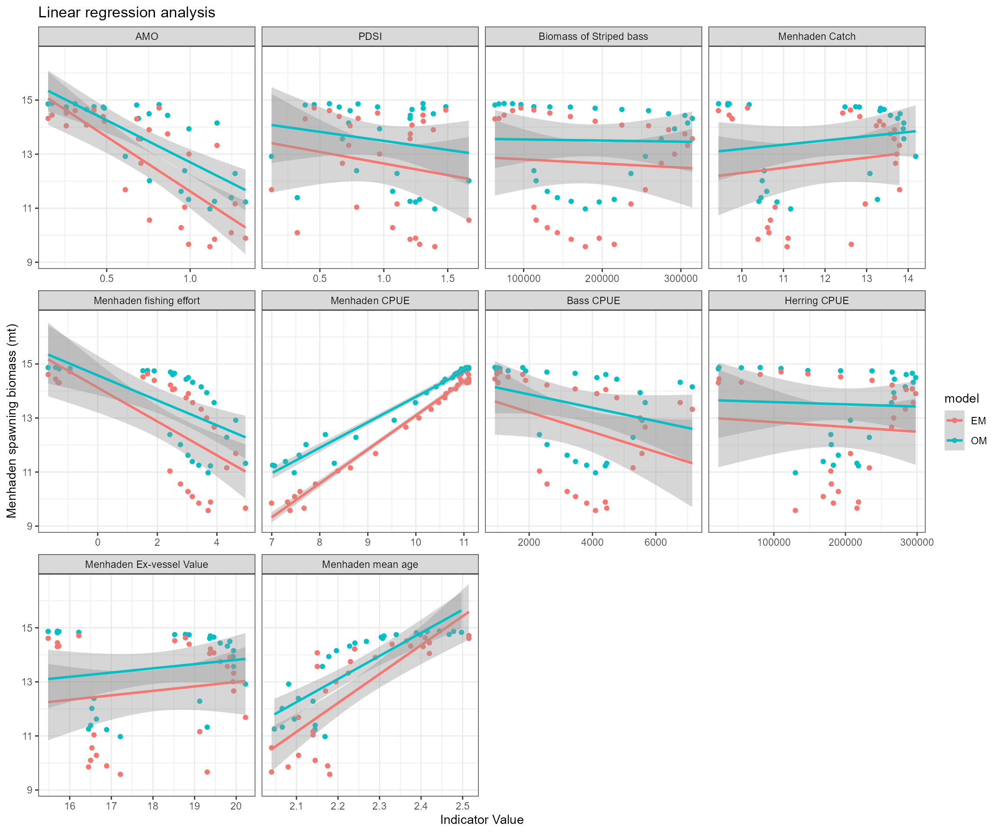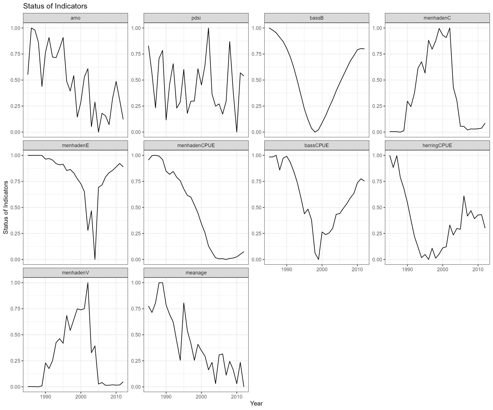 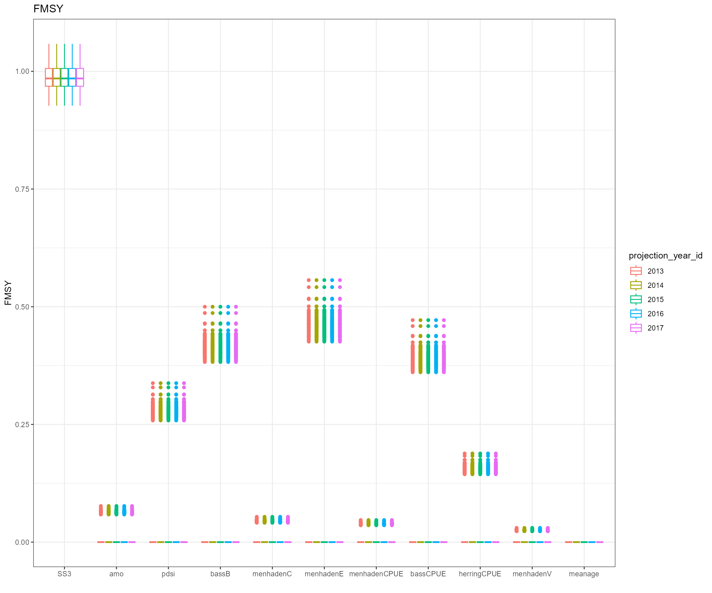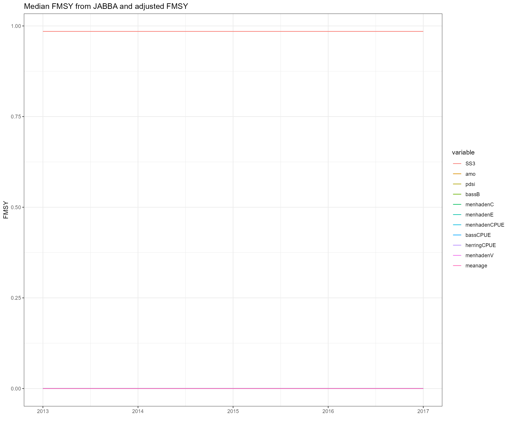
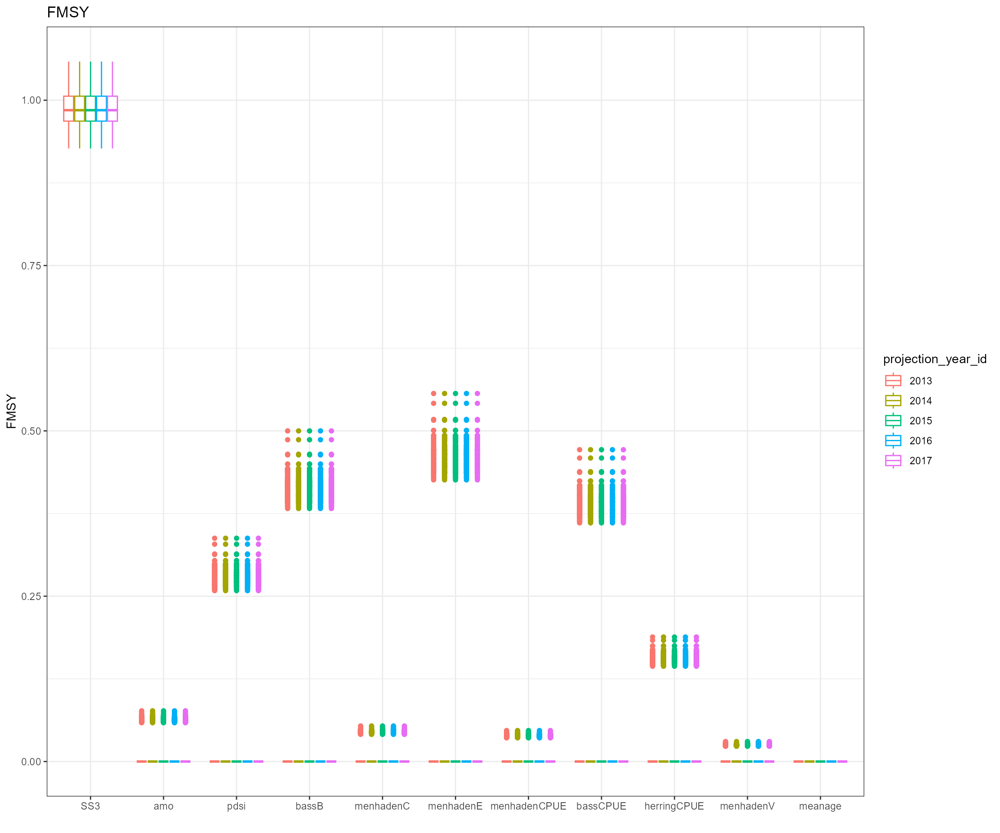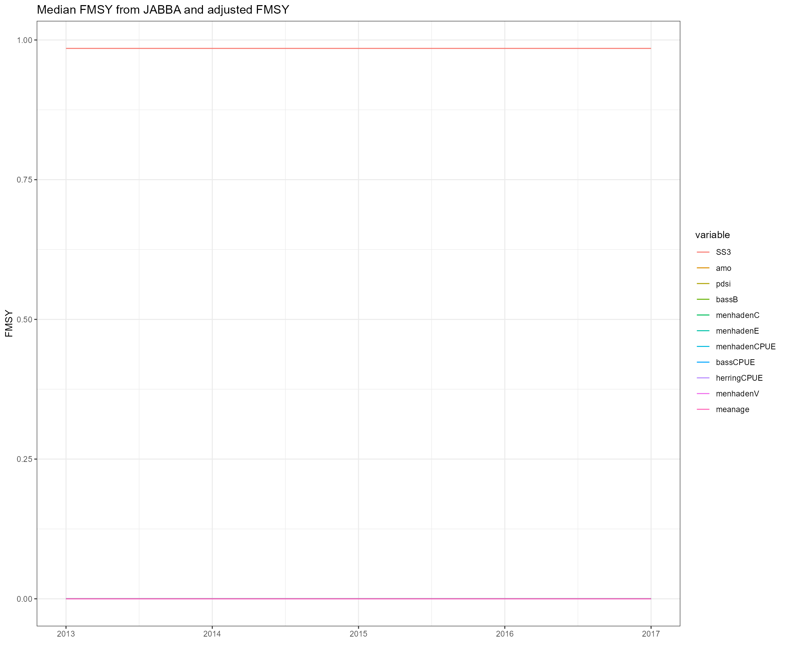
| case | projection_year | amo | pdsi | bassB | menhadenC | menhadenE | menhadenCPUE | bassCPUE | herringCPUE | menhadenV | meanage |
|---|---|---|---|---|---|---|---|---|---|---|---|
| PDSI+AMO1 Case | 1 | -4.04* | -0.86 | 0 | 0.19 | -0.63* | 1.26* | 0 | 0 | 0.16 | 10.69* |
| PDSI+AMO1 Case | 2 | -4.04* | -0.86 | 0 | 0.19 | -0.63* | 1.26* | 0 | 0 | 0.16 | 10.69* |
| PDSI+AMO1 Case | 3 | -4.04* | -0.86 | 0 | 0.19 | -0.63* | 1.26* | 0 | 0 | 0.16 | 10.69* |
| PDSI+AMO1 Case | 4 | -4.04* | -0.86 | 0 | 0.19 | -0.63* | 1.26* | 0 | 0 | 0.16 | 10.69* |
| PDSI+AMO1 Case | 5 | -4.04* | -0.86 | 0 | 0.19 | -0.63* | 1.26* | 0 | 0 | 0.16 | 10.69* |
-
Projections based on \(F_{MSY}\)
- Projections from estimation model


- Projections from estimation model
pdf 2
- Projections from operating model

 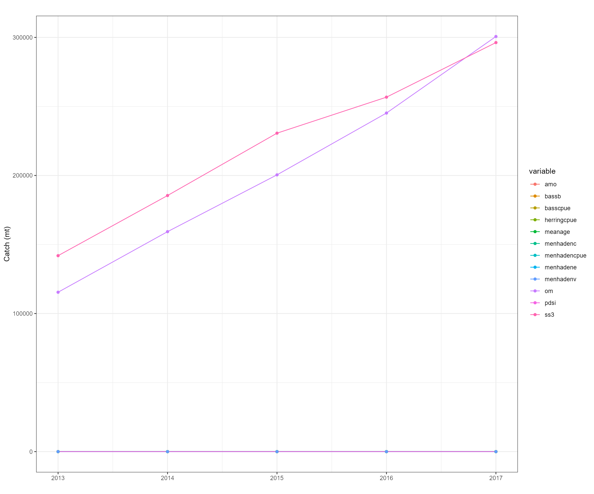
Average_Catch B_K B_BMSY Average_Biomass Max 295386 0.8949 2.0530
3623074 Min 0 0.0000 0.0000 0 OM+OM FMSY 220848 0.0261 0.0442 185400
OM+DBSRA FMSY 222195 0.2441 0.4129 500323 OM+AMO Fadj 0 0.7169 1.2125
1051243 OM+PDSI Fadj 0 0.7169 1.2125 1051243 OM+Bass Biomass Fadj 0
0.7169 1.2125 1051243 OM+Menhaden Mean Age 0 0.7169 1.2125 1051243
OM+Menhaden Catch Fadj 0 0.7169 1.2125 1051243 OM+Menhaden Effort Fadj 0
0.7169 1.2125 1051243 OM+Menhaden CPUE Fadj 0 0.7169 1.2125 1051243
OM+Bass CPUE Fadj 0 0.7169 1.2125 1051243 OM+Herring CPUE Fadj 0 0.7169
1.2125 1051243 OM+Menhaden Value Fadj 0 0.7169 1.2125 1051243 SS3 EM+SS3
FMSY 295386 0.5590 0.5062 2635864 SS3 EM+AMO Fadj 0 0.8949 2.0530
3623074 SS3 EM+PDSI Fadj 0 0.8949 2.0530 3623074 SS3 EM+Bass Biomass
Fadj 0 0.8949 2.0530 3623074 SS3 EM+Menhaden Mean Age Fadj 0 0.8949
2.0530 3623074 SS3 EM+Menhaden Catch Fadj 0 0.8949 2.0530 3623074 SS3
EM+Menhaden Effort Fadj 0 0.8949 2.0530 3623074 SS3 EM+Menhaden CPUE
Fadj 0 0.8949 2.0530 3623074 SS3 EM+Bass CPUE Fadj 0 0.8949 2.0530
3623074 SS3 EM+Herring CPUE Fadj 0 0.8949 2.0530 3623074 SS3 EM+Menhaden
Value Fadj 0 0.8949 2.0530 3623074 Bonanza_Period Collapse_Period Max 5
0 Min 0 5 OM+OM FMSY 0 5 OM+DBSRA FMSY 0 3 OM+AMO Fadj 0 1 OM+PDSI Fadj
0 1 OM+Bass Biomass Fadj 0 1 OM+Menhaden Mean Age 0 1 OM+Menhaden Catch
Fadj 0 1 OM+Menhaden Effort Fadj 0 1 OM+Menhaden CPUE Fadj 0 1 OM+Bass
CPUE Fadj 0 1 OM+Herring CPUE Fadj 0 1 OM+Menhaden Value Fadj 0 1 SS3
EM+SS3 FMSY 1 0 SS3 EM+AMO Fadj 1 0 SS3 EM+PDSI Fadj 1 0 SS3 EM+Bass
Biomass Fadj 1 0 SS3 EM+Menhaden Mean Age Fadj 1 0 SS3 EM+Menhaden Catch
Fadj 1 0 SS3 EM+Menhaden Effort Fadj 1 0 SS3 EM+Menhaden CPUE Fadj 1 0
SS3 EM+Bass CPUE Fadj 1 0 SS3 EM+Herring CPUE Fadj 1 0 SS3 EM+Menhaden
Value Fadj 1 0 pdf
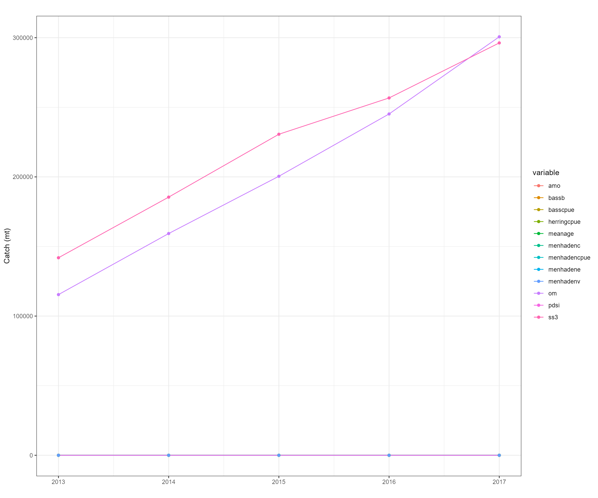
Average_Catch B_K B_BMSY Average_Biomass Max 295386 0.8949 2.0530
3623074 Min 0 0.0000 0.0000 0 OM+OM FMSY 220848 0.0261 0.0442 185400
OM+DBSRA FMSY 222195 0.2441 0.4129 500323 OM+AMO Fadj 0 0.7169 1.2125
1051243 OM+PDSI Fadj 0 0.7169 1.2125 1051243 OM+Bass Biomass Fadj 0
0.7169 1.2125 1051243 OM+Menhaden Mean Age 0 0.7169 1.2125 1051243
OM+Menhaden Catch Fadj 0 0.7169 1.2125 1051243 OM+Menhaden Effort Fadj 0
0.7169 1.2125 1051243 OM+Menhaden CPUE Fadj 0 0.7169 1.2125 1051243
OM+Bass CPUE Fadj 0 0.7169 1.2125 1051243 OM+Herring CPUE Fadj 0 0.7169
1.2125 1051243 OM+Menhaden Value Fadj 0 0.7169 1.2125 1051243 SS3 EM+SS3
FMSY 295386 0.5590 0.5062 2635864 SS3 EM+AMO Fadj 0 0.8949 2.0530
3623074 SS3 EM+PDSI Fadj 0 0.8949 2.0530 3623074 SS3 EM+Bass Biomass
Fadj 0 0.8949 2.0530 3623074 SS3 EM+Menhaden Mean Age Fadj 0 0.8949
2.0530 3623074 SS3 EM+Menhaden Catch Fadj 0 0.8949 2.0530 3623074 SS3
EM+Menhaden Effort Fadj 0 0.8949 2.0530 3623074 SS3 EM+Menhaden CPUE
Fadj 0 0.8949 2.0530 3623074 SS3 EM+Bass CPUE Fadj 0 0.8949 2.0530
3623074 SS3 EM+Herring CPUE Fadj 0 0.8949 2.0530 3623074 SS3 EM+Menhaden
Value Fadj 0 0.8949 2.0530 3623074 Bonanza_Period Collapse_Period Max 5
0 Min 0 5 OM+OM FMSY 0 5 OM+DBSRA FMSY 0 3 OM+AMO Fadj 0 1 OM+PDSI Fadj
0 1 OM+Bass Biomass Fadj 0 1 OM+Menhaden Mean Age 0 1 OM+Menhaden Catch
Fadj 0 1 OM+Menhaden Effort Fadj 0 1 OM+Menhaden CPUE Fadj 0 1 OM+Bass
CPUE Fadj 0 1 OM+Herring CPUE Fadj 0 1 OM+Menhaden Value Fadj 0 1 SS3
EM+SS3 FMSY 1 0 SS3 EM+AMO Fadj 1 0 SS3 EM+PDSI Fadj 1 0 SS3 EM+Bass
Biomass Fadj 1 0 SS3 EM+Menhaden Mean Age Fadj 1 0 SS3 EM+Menhaden Catch
Fadj 1 0 SS3 EM+Menhaden Effort Fadj 1 0 SS3 EM+Menhaden CPUE Fadj 1 0
SS3 EM+Bass CPUE Fadj 1 0 SS3 EM+Herring CPUE Fadj 1 0 SS3 EM+Menhaden
Value Fadj 1 0 pdf
EwE with environmental effects and without fleet dynamics

Case 0: stock assessment base run
TempFile Size “size of file gradfil1.tmp = 0” “size of file gradfil2.tmp = 0”
$SS_versionshort [1] “3.30”
$SS_versionNumeric [1] 3.3
$StartTime [1] “StartTime: Thu Apr 18 13:50:21 2024”
$RunTime [1] “0 hours, 0 minutes, 7 seconds.”
$Files_used [1] “Data_File: data.ss Control_File: control.ss”
$Nwarnings [1] 1
$warnings [1] “1 Final gradient: 0.000857115 is larger than final_conv: 0.0001” [2] “N warnings: 1”
$likelihoods_used values lambdas TOTAL 1070.09000 NA Catch 0.00798 NA Equil_catch 0.00000 NA Survey 384.36300 NA Age_comp 675.68900 NA Recruitment 9.94614 1.0 InitEQ_Regime 0.00000 1.0 Forecast_Recruitment 0.00000 1.0 Parm_priors 0.00000 1.0 Parm_softbounds 0.00076 NA Parm_devs 0.00000 1.0 F_Ballpark 0.08196 1.0 F_Ballpark(info_only)_2012_estF_tgtF 0.44973 0.3 Crash_Pen 0.00000 1.0
$likelihoods_laplace values lambdas NoBias_corr_Recruitment(info_only) 9.9 1 Laplace_obj_fun(info_only) 1070.1 NA
$likelihoods_by_fleet Label ALL fleet1 survey1 survey2 181 Catch_lambda NA 1.0e+00 1 1 182 Catch_like 0.008 8.0e-03 0 0 183 Init_equ_lambda NA 0.0e+00 1 1 184 Init_equ_like 0.000 3.5e+04 0 0 185 Surv_lambda NA 0.0e+00 1 1 186 Surv_like 384.363 0.0e+00 165 219 187 Surv_N_use NA 0.0e+00 23 28 188 Surv_N_skip NA 0.0e+00 0 0 189 Age_lambda NA 1.0e+00 1 1 190 Age_like 675.689 1.7e+02 222 284 191 Age_N_use NA 2.8e+01 23 28 192 Age_N_skip NA 0.0e+00 0 0
$N_estimated_parameters [1] 48
$table_of_phases
-99 -5 -4 -3 -2 -1 1 2 3 1 1 2 11 8 3 3 40 5
$estimated_non_dev_parameters Value Phase Min Max Init Status Parm_StDev Gradient SR_LN(R0) 10.75 1 3 31 15.00 OK 0.018 -0.0008576 LnQ_base_survey1(2) 8.46 1 -10 10 6.65 OK 0.053 -0.0000327 LnQ_base_survey2(3) 6.26 1 -10 10 5.67 OK 0.034 -0.0000234 AgeSel_P2_fleet1(1) 2.71 2 -10 10 0.81 OK 0.041 0.0000220 AgeSel_P3_fleet1(1) 1.71 2 -10 10 1.64 OK 0.036 -0.0000727 AgeSel_P4_fleet1(1) -0.51 2 -10 10 -0.56 OK 0.069 -0.0000621 AgeSel_P5_fleet1(1) -0.69 2 -10 10 0.61 OK 0.168 -0.0000074 AgeSel_P6_fleet1(1) -1.34 2 -10 10 -0.68 OK 0.610 -0.0000179 AgeSel_P7_fleet1(1) 0.81 2 -10 10 0.36 OK 0.652 -0.0000113 AgeSel_P1_survey1(2) 2.13 2 0 6 2.30 OK 0.070 -0.0000195 AgeSel_P2_survey1(2) 4.78 2 0 12 4.30 OK 0.111 -0.0000022 AgeSel_P4_survey1(2) 3.39 2 0 12 3.50 OK 0.284 0.0000104 AgeSel_P1_survey2(3) 2.37 2 0 6 2.30 OK 0.104 -0.0000195 AgeSel_P2_survey2(3) 4.51 2 0 12 4.30 OK 0.090 0.0000085 AgeSel_P4_survey2(3) 3.62 2 0 12 3.50 OK 0.460 0.0000078 Pr_type Prior Pr_SD Pr_Like Afterbound SR_LN(R0) No_prior NA NA NA OK LnQ_base_survey1(2) No_prior NA NA NA OK LnQ_base_survey2(3) No_prior NA NA NA OK AgeSel_P2_fleet1(1) No_prior NA NA NA OK AgeSel_P3_fleet1(1) No_prior NA NA NA OK AgeSel_P4_fleet1(1) No_prior NA NA NA OK AgeSel_P5_fleet1(1) No_prior NA NA NA OK AgeSel_P6_fleet1(1) No_prior NA NA NA OK AgeSel_P7_fleet1(1) No_prior NA NA NA OK AgeSel_P1_survey1(2) No_prior NA NA NA OK AgeSel_P2_survey1(2) No_prior NA NA NA OK AgeSel_P4_survey1(2) No_prior NA NA NA OK AgeSel_P1_survey2(3) No_prior NA NA NA OK AgeSel_P2_survey2(3) No_prior NA NA NA OK AgeSel_P4_survey2(3) No_prior NA NA NA OK
$log_det_hessian [1] 261
$maximum_gradient_component [1] 0.00086
$parameters_with_highest_gradients Value Gradient SR_LN(R0) 10.75 -8.6e-04 AgeSel_P3_fleet1(1) 1.71 -7.3e-05 Main_RecrDev_1996 1.54 -6.7e-05 AgeSel_P4_fleet1(1) -0.51 -6.2e-05 Main_RecrDev_2010 0.86 4.8e-05
$Age_Comp_Fit_Summary Factor Fleet Recommend_var_adj # Nsamp_adj Npos min_Nsamp max_Nsamp 1211 5 1 0.183 # 28 28 200 200 1212 5 2 0.078 # 23 23 200 200 1213 5 3 0.056 # 28 28 200 200 mean_Nsamp_in mean_Nsamp_adj mean_Nsamp_DM DM_theta mean_effN HarMean_effN 1211 200 200 NA NA 237 37 1212 200 200 NA NA 61 16 1213 200 200 NA NA 73 11 Curr_Var_Adj Fleet_name 1211 1 fleet1 1212 1 survey1 1213 1 survey2
$SBzero [1] 593365
$current_depletion [1] 0.26
$last_years_SPR [1] 0.29
$SPRratioLabel [1] “(1-SPR)/(1-SPR_40%)”
$sigma_R_in [1] 0.99
$sigma_R_info period N_devs SD_of_devs Var_of_devs mean_SE mean_SEsquared 1 Main 28 0.86 0.74 0.063 0.0047 2 Early+Main 28 0.86 0.74 0.063 0.0047 3 Early+Main+Late 28 0.86 0.74 0.063 0.0047 sqrt_sum_of_components SD_of_devs_over_sigma_R sqrt_sum_over_sigma_R 1 0.86 0.87 0.87 2 0.86 0.87 0.87 3 0.86 0.87 0.87 alternative_sigma_R 1 0.86 2 0.86 3 0.86
$rmse_table ERA N RMSE RMSE_over_sigmaR mean_BiasAdj 1 main 28 0.85 0.73 1 2 early 0 0.00 0.00 0
$cormessage1 [1] Range of abs(parameter correlations) is 6.66225e-05 to 0.986976
$cormessage2 [1] 1 correlation above threshold (cormax=0.95)
$cormessage3 label.i label.j corr 1 AgeSel_P4_survey2(3) AgeSel_P1_survey2(3) 0.99
$cormessage7 [1] No uncorrelated parameters below threshold (cormin=0.01)
FMSY: 1 TempFile Size “size of file gradfil1.tmp = 0” “size of file
gradfil2.tmp = 0”
$SS_versionshort [1] “3.30”
$SS_versionNumeric [1] 3.3
$StartTime [1] “StartTime: Thu Apr 18 13:50:29 2024”
$RunTime [1] “0 hours, 0 minutes, 7 seconds.”
$Files_used [1] “Data_File: data.ss Control_File: control.ss”
$Nwarnings [1] 1
$warnings [1] “1 Final gradient: 0.000788962 is larger than final_conv: 0.0001” [2] “N warnings: 1”
$likelihoods_used values lambdas TOTAL 1.1e+03 NA Catch 9.9e-03 NA Equil_catch 0.0e+00 NA Survey 4.1e+02 NA Age_comp 6.9e+02 NA Recruitment 9.3e+00 1.0 InitEQ_Regime 1.7e-33 1.0 Forecast_Recruitment 0.0e+00 1.0 Parm_priors 0.0e+00 1.0 Parm_softbounds 7.5e-04 NA Parm_devs 0.0e+00 1.0 F_Ballpark 9.9e-02 1.0 F_Ballpark(info_only)_2012_estF_tgtF 4.7e-01 0.3 Crash_Pen 0.0e+00 1.0
$likelihoods_laplace values lambdas NoBias_corr_Recruitment(info_only) 9.3 1 Laplace_obj_fun(info_only) 1108.9 NA
$likelihoods_by_fleet Label ALL fleet1 survey1 survey2 181 Catch_lambda NA 1.0e+00 1 1 182 Catch_like 9.9e-03 9.9e-03 0 0 183 Init_equ_lambda NA 0.0e+00 1 1 184 Init_equ_like 0.0e+00 3.4e+04 0 0 185 Surv_lambda NA 0.0e+00 1 1 186 Surv_like 4.1e+02 0.0e+00 166 248 187 Surv_N_use NA 0.0e+00 23 28 188 Surv_N_skip NA 0.0e+00 0 0 189 Age_lambda NA 1.0e+00 1 1 190 Age_like 6.9e+02 1.8e+02 223 287 191 Age_N_use NA 2.8e+01 23 28 192 Age_N_skip NA 0.0e+00 0 0
$N_estimated_parameters [1] 48
$table_of_phases
-99 -5 -4 -3 -2 -1 1 2 3 1 1 2 11 8 3 3 40 5
$estimated_non_dev_parameters Value Phase Min Max Init Status Parm_StDev Gradient SR_LN(R0) 10.61 1 3 31 15.00 OK 0.018 0.0007860730 LnQ_base_survey1(2) 8.50 1 -10 10 6.65 OK 0.053 0.0000000027 LnQ_base_survey2(3) 6.30 1 -10 10 5.67 OK 0.034 0.0000071941 AgeSel_P2_fleet1(1) 2.72 2 -10 10 0.81 OK 0.041 -0.0000075481 AgeSel_P3_fleet1(1) 1.72 2 -10 10 1.64 OK 0.036 0.0000894064 AgeSel_P4_fleet1(1) -0.50 2 -10 10 -0.56 OK 0.069 0.0000588336 AgeSel_P5_fleet1(1) -0.67 2 -10 10 0.61 OK 0.168 0.0000309709 AgeSel_P6_fleet1(1) -1.33 2 -10 10 -0.68 OK 0.612 0.0000146459 AgeSel_P7_fleet1(1) 0.81 2 -10 10 0.36 OK 0.655 0.0000119344 AgeSel_P1_survey1(2) 2.15 2 0 6 2.30 OK 0.072 -0.0000026723 AgeSel_P2_survey1(2) 4.78 2 0 12 4.30 OK 0.110 -0.0000014048 AgeSel_P4_survey1(2) 3.42 2 0 12 3.50 OK 0.297 0.0000004197 AgeSel_P1_survey2(3) 2.38 2 0 6 2.30 OK 0.105 -0.0000006310 AgeSel_P2_survey2(3) 4.51 2 0 12 4.30 OK 0.090 -0.0000006898 AgeSel_P4_survey2(3) 3.62 2 0 12 3.50 OK 0.471 -0.0000000461 Pr_type Prior Pr_SD Pr_Like Afterbound SR_LN(R0) No_prior NA NA NA OK LnQ_base_survey1(2) No_prior NA NA NA OK LnQ_base_survey2(3) No_prior NA NA NA OK AgeSel_P2_fleet1(1) No_prior NA NA NA OK AgeSel_P3_fleet1(1) No_prior NA NA NA OK AgeSel_P4_fleet1(1) No_prior NA NA NA OK AgeSel_P5_fleet1(1) No_prior NA NA NA OK AgeSel_P6_fleet1(1) No_prior NA NA NA OK AgeSel_P7_fleet1(1) No_prior NA NA NA OK AgeSel_P1_survey1(2) No_prior NA NA NA OK AgeSel_P2_survey1(2) No_prior NA NA NA OK AgeSel_P4_survey1(2) No_prior NA NA NA OK AgeSel_P1_survey2(3) No_prior NA NA NA OK AgeSel_P2_survey2(3) No_prior NA NA NA OK AgeSel_P4_survey2(3) No_prior NA NA NA OK
$log_det_hessian [1] 263
$maximum_gradient_component [1] 0.00079
$parameters_with_highest_gradients Value Gradient SR_LN(R0) 10.6 7.9e-04 AgeSel_P3_fleet1(1) 1.7 8.9e-05 AgeSel_P4_fleet1(1) -0.5 5.9e-05 Main_RecrDev_1997 1.3 5.7e-05 Main_RecrDev_1996 1.5 5.4e-05
$Age_Comp_Fit_Summary Factor Fleet Recommend_var_adj # Nsamp_adj Npos min_Nsamp max_Nsamp 1211 5 1 0.178 # 28 28 200 200 1212 5 2 0.078 # 23 23 200 200 1213 5 3 0.056 # 28 28 200 200 mean_Nsamp_in mean_Nsamp_adj mean_Nsamp_DM DM_theta mean_effN HarMean_effN 1211 200 200 NA NA 229 36 1212 200 200 NA NA 59 16 1213 200 200 NA NA 71 11 Curr_Var_Adj Fleet_name 1211 1 fleet1 1212 1 survey1 1213 1 survey2
$SBzero [1] 516190
$current_depletion [1] 0.29
$last_years_SPR [1] 0.2
$SPRratioLabel [1] “(1-SPR)/(1-SPR_40%)”
$sigma_R_in [1] 0.86
$sigma_R_info period N_devs SD_of_devs Var_of_devs mean_SE mean_SEsquared 1 Main 28 0.86 0.74 0.062 0.0046 2 Early+Main 28 0.86 0.74 0.062 0.0046 3 Early+Main+Late 28 0.86 0.74 0.062 0.0046 sqrt_sum_of_components SD_of_devs_over_sigma_R sqrt_sum_over_sigma_R 1 0.86 1 1 2 0.86 1 1 3 0.86 1 1 alternative_sigma_R 1 0.86 2 0.86 3 0.86
$rmse_table ERA N RMSE RMSE_over_sigmaR mean_BiasAdj 1 main 28 0.85 0.96 1 2 early 0 0.00 0.00 0
$cormessage1 [1] Range of abs(parameter correlations) is 0.000170798 to 0.987401
$cormessage2 [1] 1 correlation above threshold (cormax=0.95)
$cormessage3 label.i label.j corr 1 AgeSel_P4_survey2(3) AgeSel_P1_survey2(3) 0.99
$cormessage7 [1] No uncorrelated parameters below threshold (cormin=0.01)
Running ‘SS_html’: By default, this function will look in the directory where PNG files were created for CSV files with the name ‘plotInfoTable…’ written by ‘SS_plots.’ HTML files are written to link to these plots and put in the same directory.
Removing duplicate rows in combined plotInfoTable based on multiple CSV files Home HTML file with output will be: C:/Users/bai.li/Documents/GitHub/IPA4EBFM_Project/IFA4EBFM/data/data_rich/ecosim_forcing_pdsi_egg_amo1/2012/plots/_SS_output.html Opening HTML file in your default web-browser.

Projection
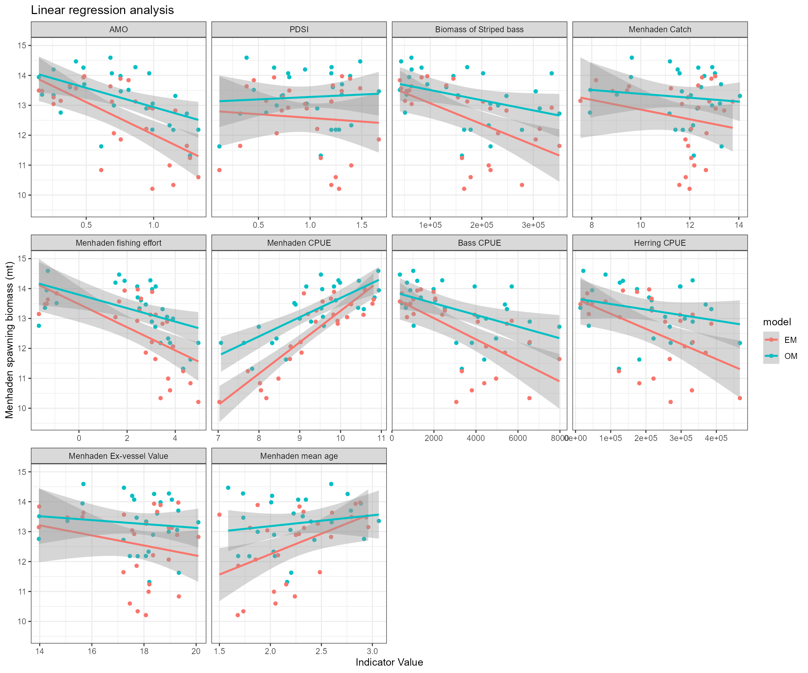 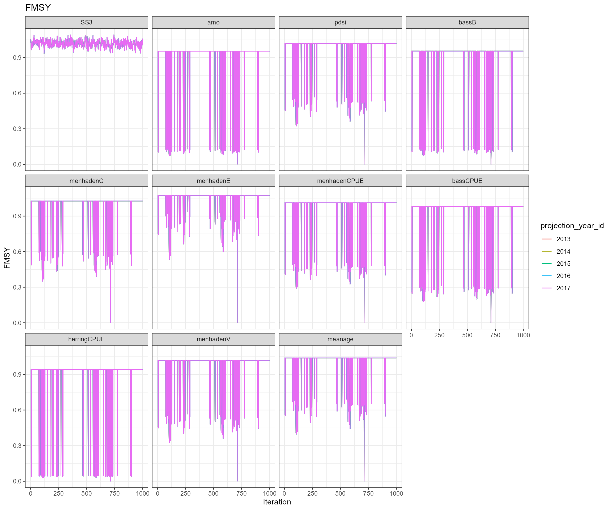
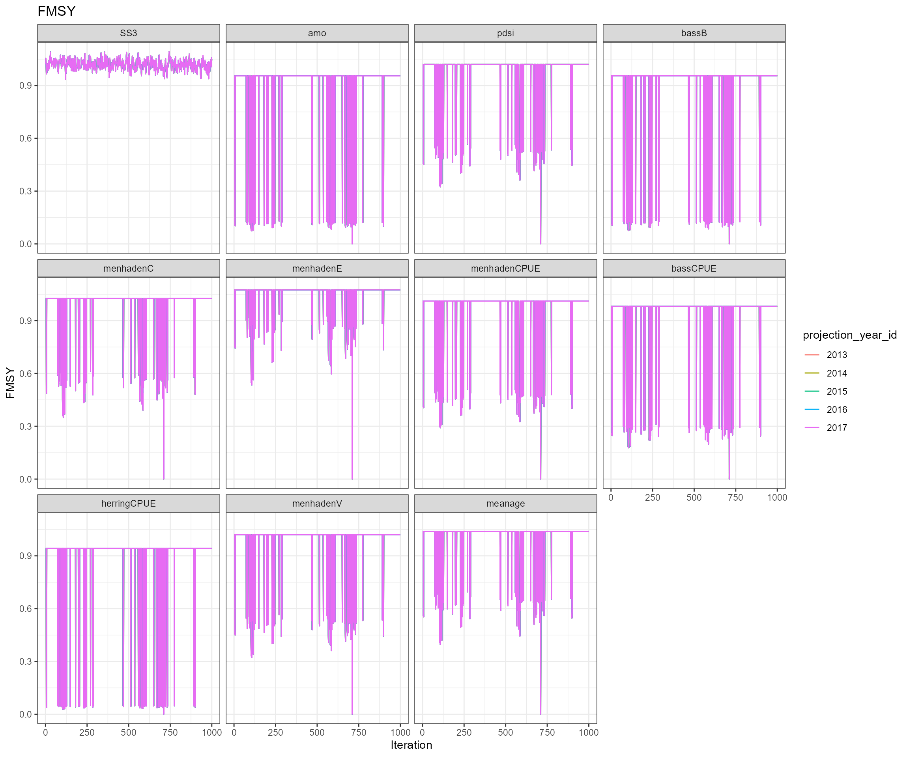 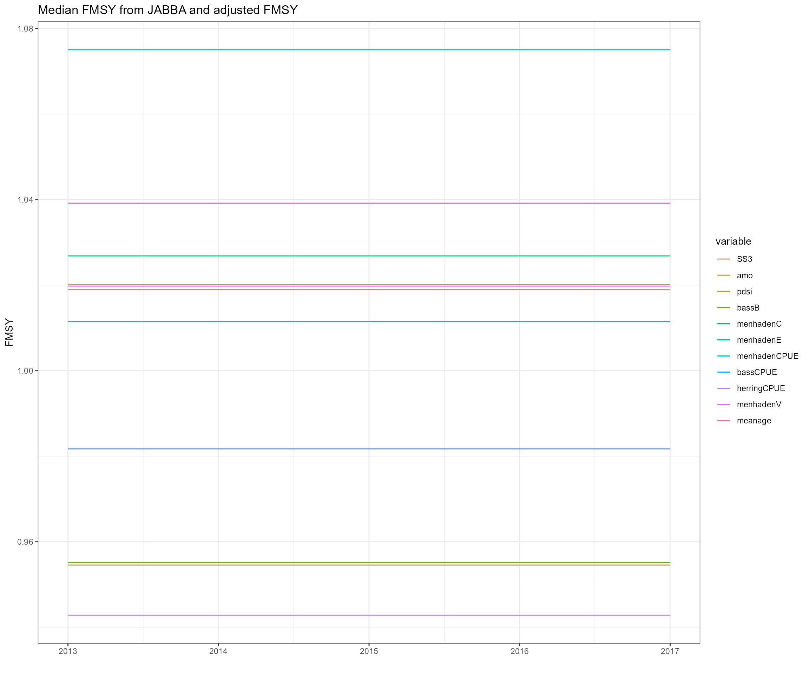
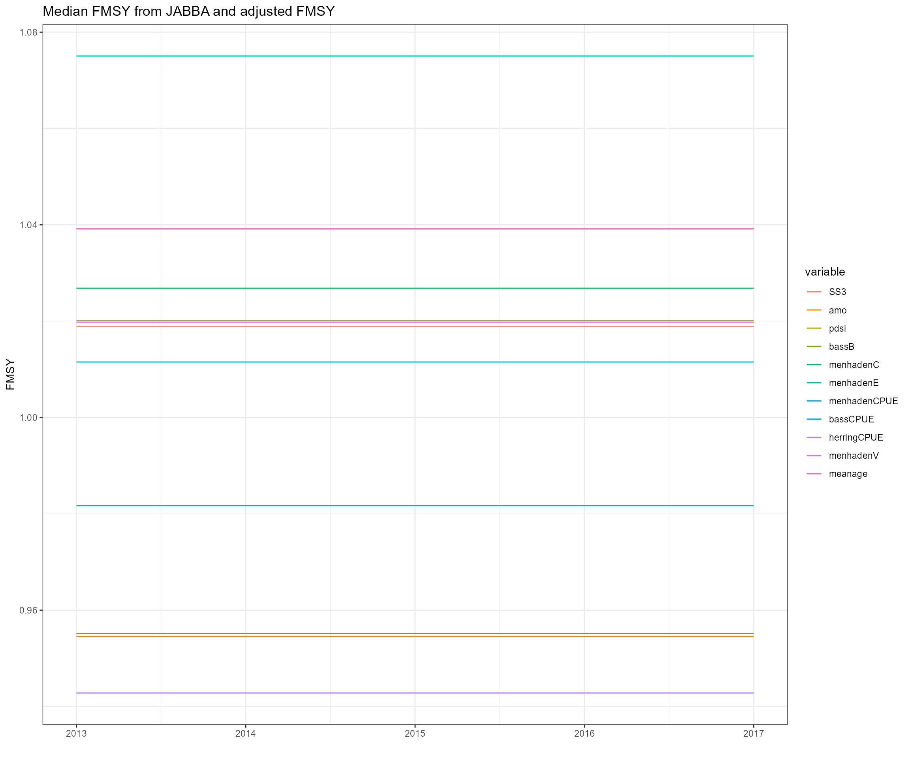
| case | projection_year | amo | pdsi | bassB | menhadenC | menhadenE | menhadenCPUE | bassCPUE | herringCPUE | menhadenV | meanage |
|---|---|---|---|---|---|---|---|---|---|---|---|
| PDSI+AMO1 Case | 1 | -2.17* | -0.25 | 0* | -0.16 | -0.39* | 1.05* | 0* | 0* | -0.17 | 1.36* |
| PDSI+AMO1 Case | 2 | -2.17* | -0.25 | 0* | -0.16 | -0.39* | 1.05* | 0* | 0* | -0.17 | 1.36* |
| PDSI+AMO1 Case | 3 | -2.17* | -0.25 | 0* | -0.16 | -0.39* | 1.05* | 0* | 0* | -0.17 | 1.36* |
| PDSI+AMO1 Case | 4 | -2.17* | -0.25 | 0* | -0.16 | -0.39* | 1.05* | 0* | 0* | -0.17 | 1.36* |
| PDSI+AMO1 Case | 5 | -2.17* | -0.25 | 0* | -0.16 | -0.39* | 1.05* | 0* | 0* | -0.17 | 1.36* |
-
Projections based on \(F_{MSY}\)
- Projections from estimation model
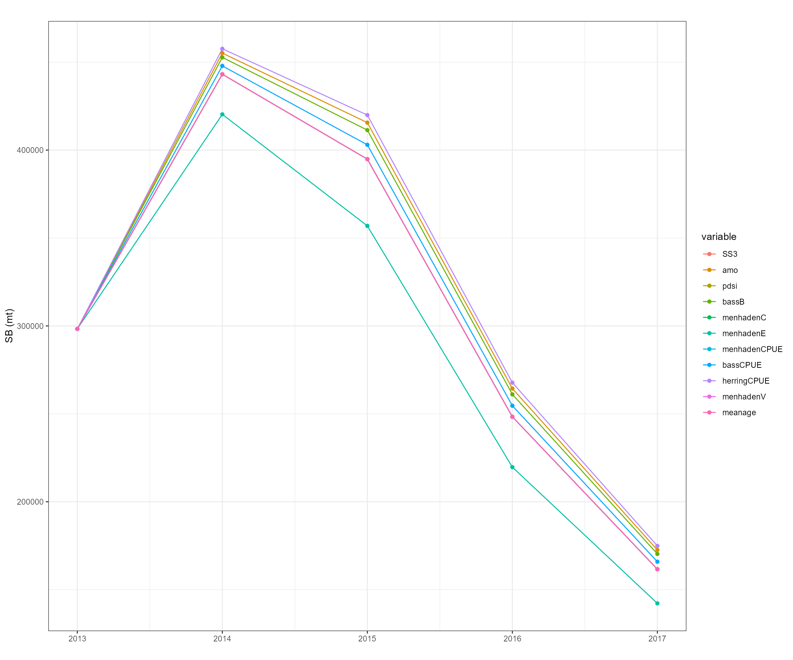

- Projections from estimation model
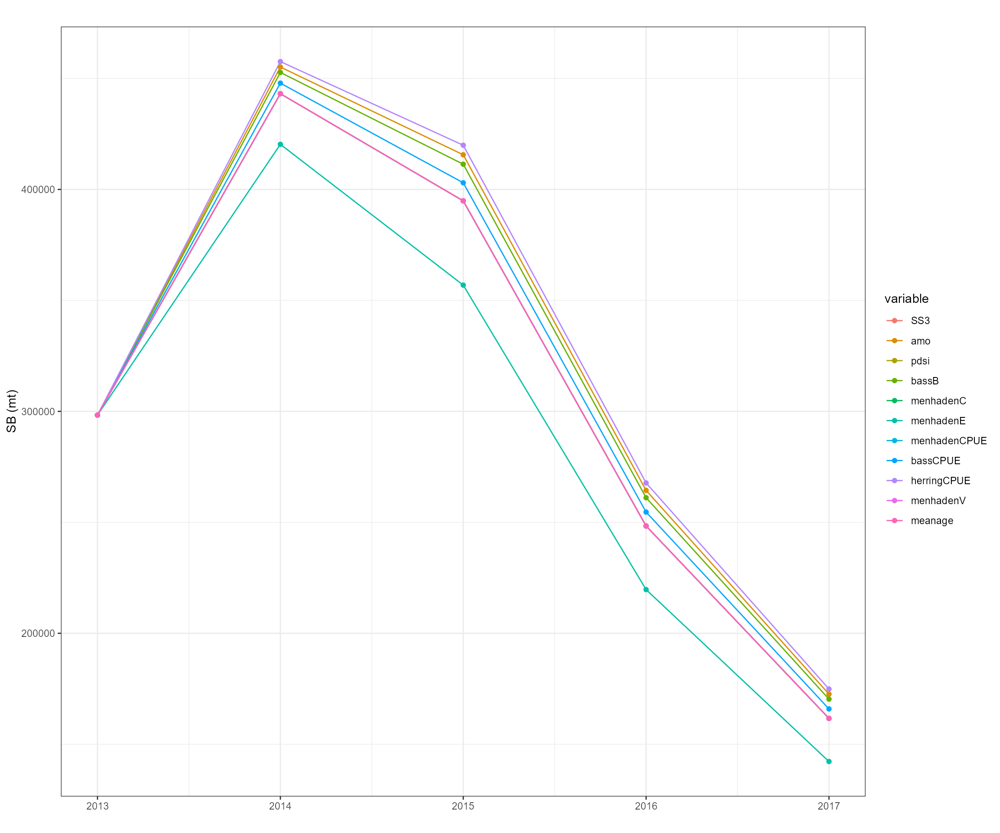
pdf 2
- Projections from operating model
 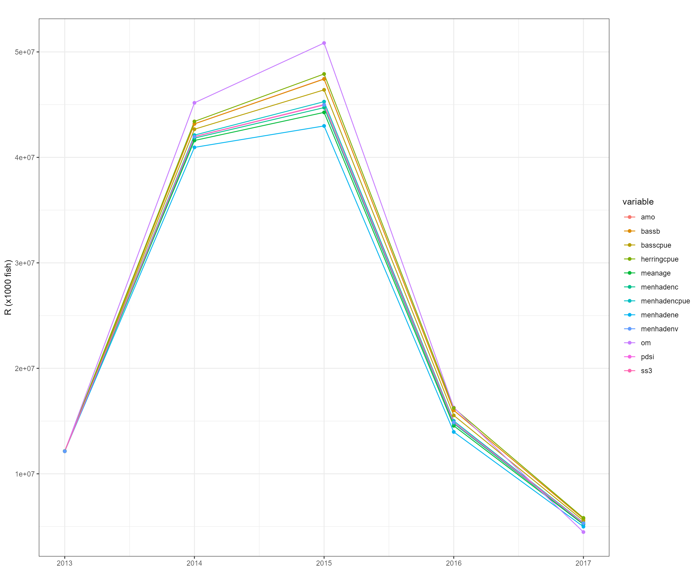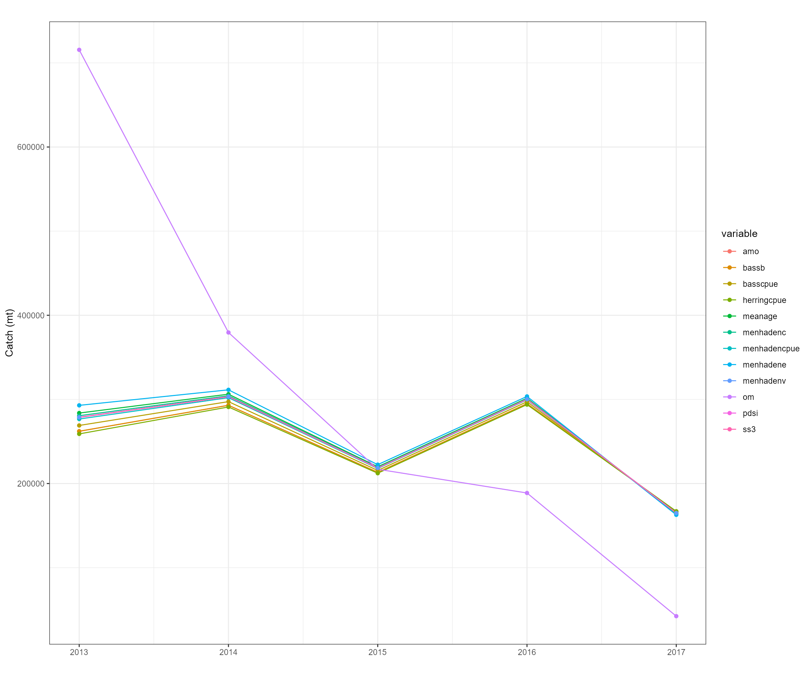
Average_Catch B_K B_BMSY Average_Biomass Max 330772 0.38068 0.4809
2138964 Min 0 0.00000 0.0000 0 OM+OM FMSY 308634 0.00872 0.0147 241687
OM+DBSRA FMSY 253050 0.08766 0.1483 523313 OM+AMO Fadj 245989 0.09457
0.1599 540906 OM+PDSI Fadj 253168 0.08754 0.1481 523010 OM+Bass Biomass
Fadj 246060 0.09450 0.1598 540735 OM+Menhaden Mean Age 255116 0.08558
0.1448 517949 OM+Menhaden Catch Fadj 253864 0.08684 0.1469 521212
OM+Menhaden Effort Fadj 258610 0.08201 0.1387 508623 OM+Menhaden CPUE
Fadj 252274 0.08843 0.1496 525301 OM+Bass CPUE Fadj 249059 0.09160
0.1549 533392 OM+Herring CPUE Fadj 244618 0.09588 0.1622 544200
OM+Menhaden Value Fadj 253136 0.08757 0.1481 523090 SS3 EM+SS3 FMSY
318683 0.37141 0.4444 2108978 SS3 EM+AMO Fadj 311895 0.37910 0.4745
2133868 SS3 EM+PDSI Fadj 318683 0.37141 0.4444 2108978 SS3 EM+Bass
Biomass Fadj 313295 0.37754 0.4683 2128810 SS3 EM+Menhaden Mean Age Fadj
318683 0.37141 0.4444 2108978 SS3 EM+Menhaden Catch Fadj 330772 0.35683
0.3910 2061948 SS3 EM+Menhaden Effort Fadj 318683 0.37141 0.4444 2108978
SS3 EM+Menhaden CPUE Fadj 316031 0.37446 0.4562 2118818 SS3 EM+Bass CPUE
Fadj 310472 0.38068 0.4809 2138964 SS3 EM+Herring CPUE Fadj 318683
0.37141 0.4444 2108978 SS3 EM+Menhaden Value Fadj 318683 0.37141 0.4444
2108978 Bonanza_Period Collapse_Period Max 5 0 Min 0 5 OM+OM FMSY 0 5
OM+DBSRA FMSY 0 3 OM+AMO Fadj 0 3 OM+PDSI Fadj 0 3 OM+Bass Biomass Fadj
0 3 OM+Menhaden Mean Age 0 3 OM+Menhaden Catch Fadj 0 3 OM+Menhaden
Effort Fadj 0 3 OM+Menhaden CPUE Fadj 0 3 OM+Bass CPUE Fadj 0 3
OM+Herring CPUE Fadj 0 3 OM+Menhaden Value Fadj 0 3 SS3 EM+SS3 FMSY 1 0
SS3 EM+AMO Fadj 1 0 SS3 EM+PDSI Fadj 1 0 SS3 EM+Bass Biomass Fadj 1 0
SS3 EM+Menhaden Mean Age Fadj 1 0 SS3 EM+Menhaden Catch Fadj 1 0 SS3
EM+Menhaden Effort Fadj 1 0 SS3 EM+Menhaden CPUE Fadj 1 0 SS3 EM+Bass
CPUE Fadj 1 0 SS3 EM+Herring CPUE Fadj 1 0 SS3 EM+Menhaden Value Fadj 1
0 pdf
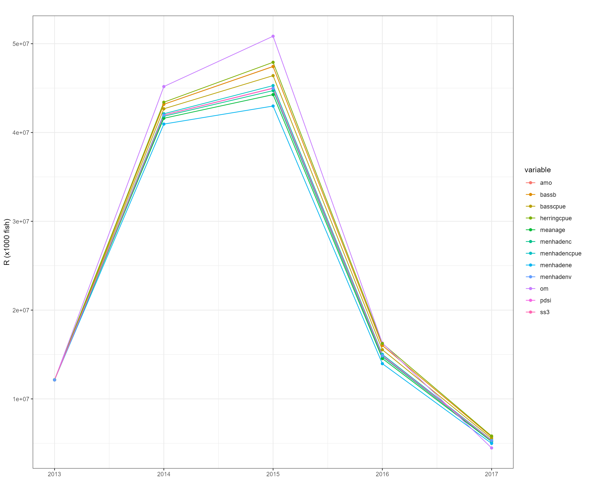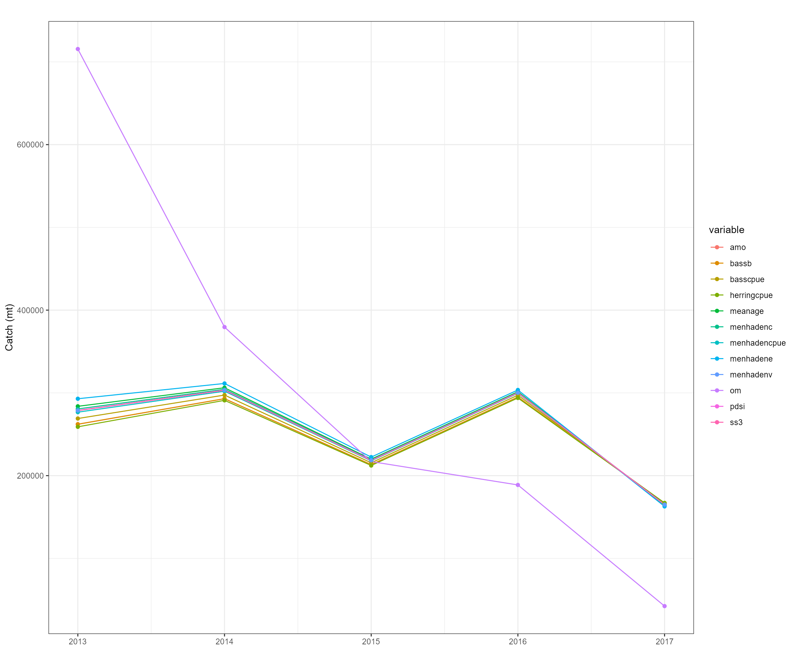
Average_Catch B_K B_BMSY Average_Biomass Max 330772 0.38068 0.4809
2138964 Min 0 0.00000 0.0000 0 OM+OM FMSY 308634 0.00872 0.0147 241687
OM+DBSRA FMSY 253050 0.08766 0.1483 523313 OM+AMO Fadj 245989 0.09457
0.1599 540906 OM+PDSI Fadj 253168 0.08754 0.1481 523010 OM+Bass Biomass
Fadj 246060 0.09450 0.1598 540735 OM+Menhaden Mean Age 255116 0.08558
0.1448 517949 OM+Menhaden Catch Fadj 253864 0.08684 0.1469 521212
OM+Menhaden Effort Fadj 258610 0.08201 0.1387 508623 OM+Menhaden CPUE
Fadj 252274 0.08843 0.1496 525301 OM+Bass CPUE Fadj 249059 0.09160
0.1549 533392 OM+Herring CPUE Fadj 244618 0.09588 0.1622 544200
OM+Menhaden Value Fadj 253136 0.08757 0.1481 523090 SS3 EM+SS3 FMSY
318683 0.37141 0.4444 2108978 SS3 EM+AMO Fadj 311895 0.37910 0.4745
2133868 SS3 EM+PDSI Fadj 318683 0.37141 0.4444 2108978 SS3 EM+Bass
Biomass Fadj 313295 0.37754 0.4683 2128810 SS3 EM+Menhaden Mean Age Fadj
318683 0.37141 0.4444 2108978 SS3 EM+Menhaden Catch Fadj 330772 0.35683
0.3910 2061948 SS3 EM+Menhaden Effort Fadj 318683 0.37141 0.4444 2108978
SS3 EM+Menhaden CPUE Fadj 316031 0.37446 0.4562 2118818 SS3 EM+Bass CPUE
Fadj 310472 0.38068 0.4809 2138964 SS3 EM+Herring CPUE Fadj 318683
0.37141 0.4444 2108978 SS3 EM+Menhaden Value Fadj 318683 0.37141 0.4444
2108978 Bonanza_Period Collapse_Period Max 5 0 Min 0 5 OM+OM FMSY 0 5
OM+DBSRA FMSY 0 3 OM+AMO Fadj 0 3 OM+PDSI Fadj 0 3 OM+Bass Biomass Fadj
0 3 OM+Menhaden Mean Age 0 3 OM+Menhaden Catch Fadj 0 3 OM+Menhaden
Effort Fadj 0 3 OM+Menhaden CPUE Fadj 0 3 OM+Bass CPUE Fadj 0 3
OM+Herring CPUE Fadj 0 3 OM+Menhaden Value Fadj 0 3 SS3 EM+SS3 FMSY 1 0
SS3 EM+AMO Fadj 1 0 SS3 EM+PDSI Fadj 1 0 SS3 EM+Bass Biomass Fadj 1 0
SS3 EM+Menhaden Mean Age Fadj 1 0 SS3 EM+Menhaden Catch Fadj 1 0 SS3
EM+Menhaden Effort Fadj 1 0 SS3 EM+Menhaden CPUE Fadj 1 0 SS3 EM+Bass
CPUE Fadj 1 0 SS3 EM+Herring CPUE Fadj 1 0 SS3 EM+Menhaden Value Fadj 1
0 pdf
EwE with environmental effects and fleet dynamics

Case 0: stock assessment base run
TempFile Size “size of file gradfil1.tmp = 0” “size of file gradfil2.tmp = 0”
$SS_versionshort [1] “3.30”
$SS_versionNumeric [1] 3.3
$StartTime [1] “StartTime: Thu Apr 18 13:51:06 2024”
$RunTime [1] “0 hours, 0 minutes, 6 seconds.”
$Files_used [1] “Data_File: data.ss Control_File: control.ss”
$Nwarnings [1] 0
$warnings [1] “N warnings: 0”
$likelihoods_used values lambdas TOTAL 644.65100 NA Catch 0.00042 NA Equil_catch 0.00000 NA Survey 115.82500 NA Age_comp 513.04500 NA Recruitment 15.68800 1.0 InitEQ_Regime 0.00000 1.0 Forecast_Recruitment 0.00000 1.0 Parm_priors 0.00000 1.0 Parm_softbounds 0.00091 NA Parm_devs 0.00000 1.0 F_Ballpark 0.09158 1.0 F_Ballpark(info_only)_2012_estF_tgtF 0.46025 0.3 Crash_Pen 0.00000 1.0
$likelihoods_laplace values lambdas NoBias_corr_Recruitment(info_only) 16 1 Laplace_obj_fun(info_only) 645 NA
$likelihoods_by_fleet Label ALL fleet1 survey1 survey2 181 Catch_lambda NA 1.0e+00 1 1 182 Catch_like 4.2e-04 4.2e-04 0 0 183 Init_equ_lambda NA 0.0e+00 1 1 184 Init_equ_like 0.0e+00 3.9e+04 0 0 185 Surv_lambda NA 0.0e+00 1 1 186 Surv_like 1.2e+02 0.0e+00 71 45 187 Surv_N_use NA 0.0e+00 23 28 188 Surv_N_skip NA 0.0e+00 0 0 189 Age_lambda NA 1.0e+00 1 1 190 Age_like 5.1e+02 9.8e+01 213 202 191 Age_N_use NA 2.8e+01 23 28 192 Age_N_skip NA 0.0e+00 0 0
$N_estimated_parameters [1] 48
$table_of_phases
-99 -5 -4 -3 -2 -1 1 2 3 1 1 2 11 8 3 3 40 5
$estimated_non_dev_parameters Value Phase Min Max Init Status Parm_StDev Gradient SR_LN(R0) 11.24 1 3 31 15.00 OK 0.049 0.0000152 LnQ_base_survey1(2) 8.38 1 -10 10 6.65 OK 0.067 0.0000746 LnQ_base_survey2(3) 6.57 1 -10 10 5.67 OK 0.059 -0.0000367 AgeSel_P2_fleet1(1) 0.80 2 -10 10 0.81 OK 0.039 -0.0000953 AgeSel_P3_fleet1(1) 1.69 2 -10 10 1.64 OK 0.042 -0.0000885 AgeSel_P4_fleet1(1) -0.53 2 -10 10 -0.56 OK 0.073 -0.0000460 AgeSel_P5_fleet1(1) 0.64 2 -10 10 0.61 OK 0.100 -0.0000512 AgeSel_P6_fleet1(1) -0.66 2 -10 10 -0.68 OK 0.187 -0.0000104 AgeSel_P7_fleet1(1) 0.43 2 -10 10 0.36 OK 0.260 0.0000044 AgeSel_P1_survey1(2) 1.94 2 0 6 2.30 OK 0.052 -0.0000569 AgeSel_P2_survey1(2) 4.81 2 0 12 4.30 OK 0.134 0.0000022 AgeSel_P4_survey1(2) 2.56 2 0 12 3.50 OK 0.158 0.0000346 AgeSel_P1_survey2(3) 2.31 2 0 6 2.30 OK 0.067 -0.0000438 AgeSel_P2_survey2(3) 4.64 2 0 12 4.30 OK 0.075 -0.0000058 AgeSel_P4_survey2(3) 3.56 2 0 12 3.50 OK 0.297 0.0000158 Pr_type Prior Pr_SD Pr_Like Afterbound SR_LN(R0) No_prior NA NA NA OK LnQ_base_survey1(2) No_prior NA NA NA OK LnQ_base_survey2(3) No_prior NA NA NA OK AgeSel_P2_fleet1(1) No_prior NA NA NA OK AgeSel_P3_fleet1(1) No_prior NA NA NA OK AgeSel_P4_fleet1(1) No_prior NA NA NA OK AgeSel_P5_fleet1(1) No_prior NA NA NA OK AgeSel_P6_fleet1(1) No_prior NA NA NA OK AgeSel_P7_fleet1(1) No_prior NA NA NA OK AgeSel_P1_survey1(2) No_prior NA NA NA OK AgeSel_P2_survey1(2) No_prior NA NA NA OK AgeSel_P4_survey1(2) No_prior NA NA NA OK AgeSel_P1_survey2(3) No_prior NA NA NA OK AgeSel_P2_survey2(3) No_prior NA NA NA OK AgeSel_P4_survey2(3) No_prior NA NA NA OK
$log_det_hessian [1] 252
$maximum_gradient_component [1] 9.5e-05
$parameters_with_highest_gradients Value Gradient AgeSel_P2_fleet1(1) 0.80 -9.5e-05 AgeSel_P3_fleet1(1) 1.69 -8.8e-05 LnQ_base_survey1(2) 8.38 7.5e-05 AgeSel_P1_survey1(2) 1.94 -5.7e-05 AgeSel_P5_fleet1(1) 0.64 -5.1e-05
$Age_Comp_Fit_Summary Factor Fleet Recommend_var_adj # Nsamp_adj Npos min_Nsamp max_Nsamp 1211 5 1 0.480 # 28 28 200 200 1212 5 2 0.086 # 23 23 200 200 1213 5 3 0.118 # 28 28 200 200 mean_Nsamp_in mean_Nsamp_adj mean_Nsamp_DM DM_theta mean_effN HarMean_effN 1211 200 200 NA NA 209 96 1212 200 200 NA NA 168 17 1213 200 200 NA NA 519 24 Curr_Var_Adj Fleet_name 1211 1 fleet1 1212 1 survey1 1213 1 survey2
$SBzero [1] 950440
$current_depletion [1] 0.28
$last_years_SPR [1] 0.26
$SPRratioLabel [1] “(1-SPR)/(1-SPR_40%)”
$sigma_R_in [1] 0.99
$sigma_R_info period N_devs SD_of_devs Var_of_devs mean_SE mean_SEsquared 1 Main 28 1.1 1.2 0.062 0.0043 2 Early+Main 28 1.1 1.2 0.062 0.0043 3 Early+Main+Late 28 1.1 1.2 0.062 0.0043 sqrt_sum_of_components SD_of_devs_over_sigma_R sqrt_sum_over_sigma_R 1 1.1 1.1 1.1 2 1.1 1.1 1.1 3 1.1 1.1 1.1 alternative_sigma_R 1 1.1 2 1.1 3 1.1
$rmse_table ERA N RMSE RMSE_over_sigmaR mean_BiasAdj 1 main 28 1.1 1.1 1 2 early 0 0.0 0.0 0
$cormessage1 [1] Range of abs(parameter correlations) is 7.89951e-05 to 0.979311
$cormessage2 [1] 1 correlation above threshold (cormax=0.95)
$cormessage3 label.i label.j corr 1 AgeSel_P4_survey2(3) AgeSel_P1_survey2(3) 0.98
$cormessage7 [1] No uncorrelated parameters below threshold (cormin=0.01)
FMSY: 1 TempFile Size “size of file gradfil1.tmp = 0” “size of file
gradfil2.tmp = 0”
$SS_versionshort [1] “3.30”
$SS_versionNumeric [1] 3.3
$StartTime [1] “StartTime: Thu Apr 18 13:51:13 2024”
$RunTime [1] “0 hours, 0 minutes, 6 seconds.”
$Files_used [1] “Data_File: data.ss Control_File: control.ss”
$Nwarnings [1] 0
$warnings [1] “N warnings: 0”
$likelihoods_used values lambdas TOTAL 635.27300 NA Catch 0.00039 NA Equil_catch 0.00000 NA Survey 108.47200 NA Age_comp 511.19700 NA Recruitment 15.52230 1.0 InitEQ_Regime 0.00000 1.0 Forecast_Recruitment 0.00000 1.0 Parm_priors 0.00000 1.0 Parm_softbounds 0.00090 NA Parm_devs 0.00000 1.0 F_Ballpark 0.08011 1.0 F_Ballpark(info_only)_2012_estF_tgtF 0.44767 0.3 Crash_Pen 0.00000 1.0
$likelihoods_laplace values lambdas NoBias_corr_Recruitment(info_only) 16 1 Laplace_obj_fun(info_only) 635 NA
$likelihoods_by_fleet Label ALL fleet1 survey1 survey2 181 Catch_lambda NA 1.0e+00 1 1 182 Catch_like 3.9e-04 3.9e-04 0 0 183 Init_equ_lambda NA 0.0e+00 1 1 184 Init_equ_like 0.0e+00 4.0e+04 0 0 185 Surv_lambda NA 0.0e+00 1 1 186 Surv_like 1.1e+02 0.0e+00 71 38 187 Surv_N_use NA 0.0e+00 23 28 188 Surv_N_skip NA 0.0e+00 0 0 189 Age_lambda NA 1.0e+00 1 1 190 Age_like 5.1e+02 9.6e+01 212 203 191 Age_N_use NA 2.8e+01 23 28 192 Age_N_skip NA 0.0e+00 0 0
$N_estimated_parameters [1] 48
$table_of_phases
-99 -5 -4 -3 -2 -1 1 2 3 1 1 2 11 8 3 3 40 5
$estimated_non_dev_parameters Value Phase Min Max Init Status Parm_StDev Gradient SR_LN(R0) 11.35 1 3 31 15.00 OK 0.050 0.00005009 LnQ_base_survey1(2) 8.36 1 -10 10 6.65 OK 0.068 -0.00000810 LnQ_base_survey2(3) 6.54 1 -10 10 5.67 OK 0.059 0.00003302 AgeSel_P2_fleet1(1) 0.79 2 -10 10 0.81 OK 0.039 0.00001197 AgeSel_P3_fleet1(1) 1.68 2 -10 10 1.64 OK 0.042 0.00001160 AgeSel_P4_fleet1(1) -0.54 2 -10 10 -0.56 OK 0.073 0.00000764 AgeSel_P5_fleet1(1) 0.62 2 -10 10 0.61 OK 0.100 0.00000471 AgeSel_P6_fleet1(1) -0.67 2 -10 10 -0.68 OK 0.187 0.00000327 AgeSel_P7_fleet1(1) 0.42 2 -10 10 0.36 OK 0.260 0.00000216 AgeSel_P1_survey1(2) 1.94 2 0 6 2.30 OK 0.052 0.00000493 AgeSel_P2_survey1(2) 4.81 2 0 12 4.30 OK 0.135 0.00000521 AgeSel_P4_survey1(2) 2.56 2 0 12 3.50 OK 0.157 0.00000111 AgeSel_P1_survey2(3) 2.31 2 0 6 2.30 OK 0.067 0.00000965 AgeSel_P2_survey2(3) 4.64 2 0 12 4.30 OK 0.075 0.00000026 AgeSel_P4_survey2(3) 3.58 2 0 12 3.50 OK 0.297 -0.00000461 Pr_type Prior Pr_SD Pr_Like Afterbound SR_LN(R0) No_prior NA NA NA OK LnQ_base_survey1(2) No_prior NA NA NA OK LnQ_base_survey2(3) No_prior NA NA NA OK AgeSel_P2_fleet1(1) No_prior NA NA NA OK AgeSel_P3_fleet1(1) No_prior NA NA NA OK AgeSel_P4_fleet1(1) No_prior NA NA NA OK AgeSel_P5_fleet1(1) No_prior NA NA NA OK AgeSel_P6_fleet1(1) No_prior NA NA NA OK AgeSel_P7_fleet1(1) No_prior NA NA NA OK AgeSel_P1_survey1(2) No_prior NA NA NA OK AgeSel_P2_survey1(2) No_prior NA NA NA OK AgeSel_P4_survey1(2) No_prior NA NA NA OK AgeSel_P1_survey2(3) No_prior NA NA NA OK AgeSel_P2_survey2(3) No_prior NA NA NA OK AgeSel_P4_survey2(3) No_prior NA NA NA OK
$log_det_hessian [1] 251
$maximum_gradient_component [1] 5e-05
$parameters_with_highest_gradients Value Gradient SR_LN(R0) 11.35 5.0e-05 LnQ_base_survey2(3) 6.54 3.3e-05 AgeSel_P2_fleet1(1) 0.79 1.2e-05 AgeSel_P3_fleet1(1) 1.68 1.2e-05 AgeSel_P1_survey2(3) 2.31 9.6e-06
$Age_Comp_Fit_Summary Factor Fleet Recommend_var_adj # Nsamp_adj Npos min_Nsamp max_Nsamp 1211 5 1 0.491 # 28 28 200 200 1212 5 2 0.086 # 23 23 200 200 1213 5 3 0.117 # 28 28 200 200 mean_Nsamp_in mean_Nsamp_adj mean_Nsamp_DM DM_theta mean_effN HarMean_effN 1211 200 200 NA NA 221 98 1212 200 200 NA NA 169 17 1213 200 200 NA NA 418 23 Curr_Var_Adj Fleet_name 1211 1 fleet1 1212 1 survey1 1213 1 survey2
$SBzero [1] 1061870
$current_depletion [1] 0.26
$last_years_SPR [1] 0.18
$SPRratioLabel [1] “(1-SPR)/(1-SPR_40%)”
$sigma_R_in [1] 1.1
$sigma_R_info period N_devs SD_of_devs Var_of_devs mean_SE mean_SEsquared 1 Main 28 1.1 1.2 0.062 0.0043 2 Early+Main 28 1.1 1.2 0.062 0.0043 3 Early+Main+Late 28 1.1 1.2 0.062 0.0043 sqrt_sum_of_components SD_of_devs_over_sigma_R sqrt_sum_over_sigma_R 1 1.1 1 1 2 1.1 1 1 3 1.1 1 1 alternative_sigma_R 1 1.1 2 1.1 3 1.1
$rmse_table ERA N RMSE RMSE_over_sigmaR mean_BiasAdj 1 main 28 1.1 0.96 1 2 early 0 0.0 0.00 0
$cormessage1 [1] Range of abs(parameter correlations) is 8.3771e-05 to 0.979308
$cormessage2 [1] 1 correlation above threshold (cormax=0.95)
$cormessage3 label.i label.j corr 1 AgeSel_P4_survey2(3) AgeSel_P1_survey2(3) 0.98
$cormessage7 [1] No uncorrelated parameters below threshold (cormin=0.01)
Running ‘SS_html’: By default, this function will look in the directory where PNG files were created for CSV files with the name ‘plotInfoTable…’ written by ‘SS_plots.’ HTML files are written to link to these plots and put in the same directory.
Removing duplicate rows in combined plotInfoTable based on multiple CSV files Home HTML file with output will be: C:/Users/bai.li/Documents/GitHub/IPA4EBFM_Project/IFA4EBFM/data/data_rich/ecosim_fleet_dynamics/2012/plots/_SS_output.html Opening HTML file in your default web-browser.
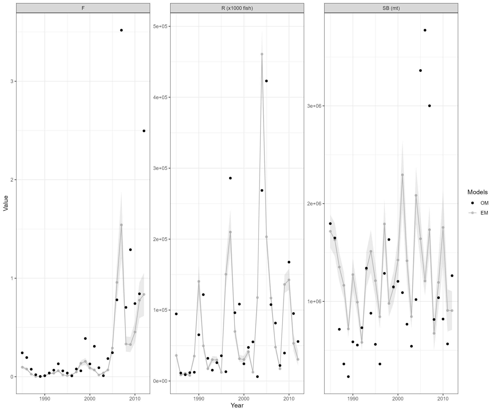
Projection
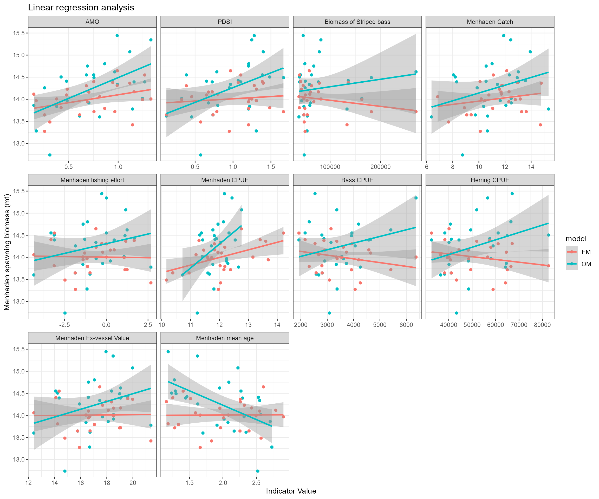 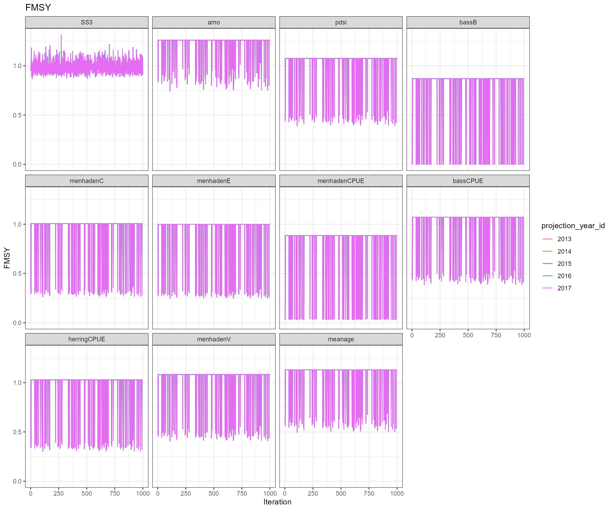
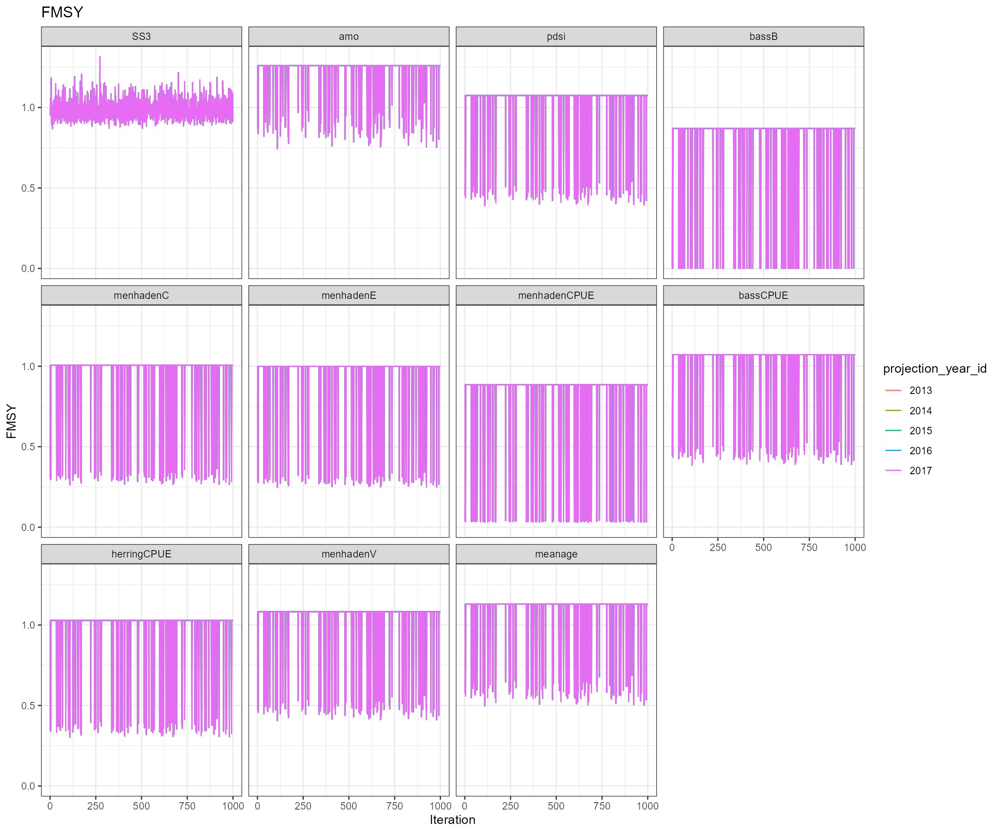 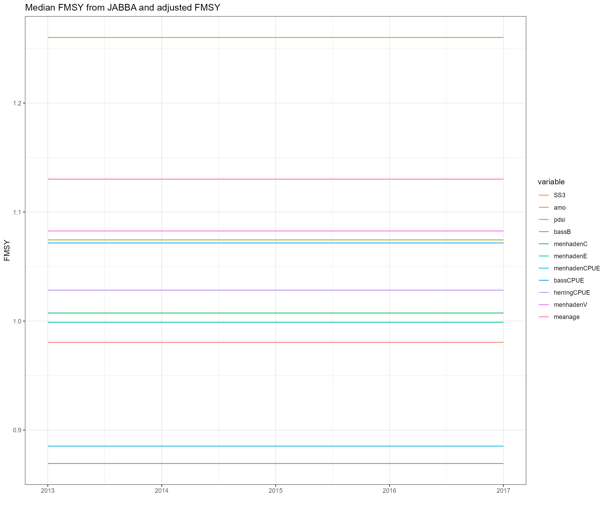
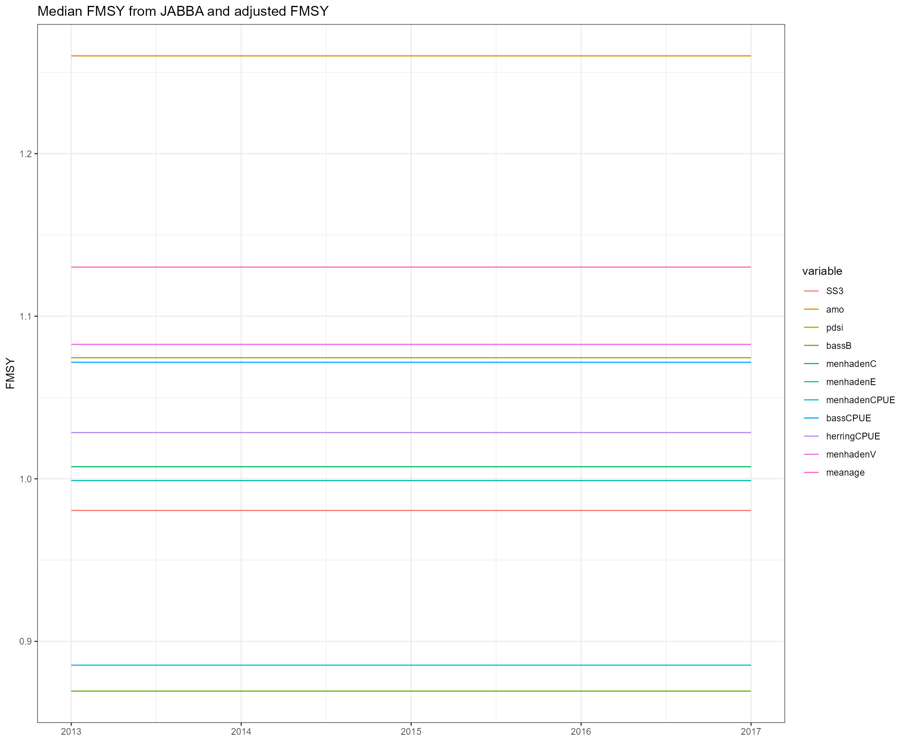
| case | projection_year | amo | pdsi | bassB | menhadenC | menhadenE | menhadenCPUE | bassCPUE | herringCPUE | menhadenV | meanage |
|---|---|---|---|---|---|---|---|---|---|---|---|
| PDSI+AMO1 Case | 1 | 0.36 | 0.1 | 0 | 0.04 | -0.01 | 0.17* | 0 | 0 | 0 | 0.01 |
| PDSI+AMO1 Case | 2 | 0.36 | 0.1 | 0 | 0.04 | -0.01 | 0.17* | 0 | 0 | 0 | 0.01 |
| PDSI+AMO1 Case | 3 | 0.36 | 0.1 | 0 | 0.04 | -0.01 | 0.17* | 0 | 0 | 0 | 0.01 |
| PDSI+AMO1 Case | 4 | 0.36 | 0.1 | 0 | 0.04 | -0.01 | 0.17* | 0 | 0 | 0 | 0.01 |
| PDSI+AMO1 Case | 5 | 0.36 | 0.1 | 0 | 0.04 | -0.01 | 0.17* | 0 | 0 | 0 | 0.01 |
-
Projections based on \(F_{MSY}\)
- Projections from estimation model 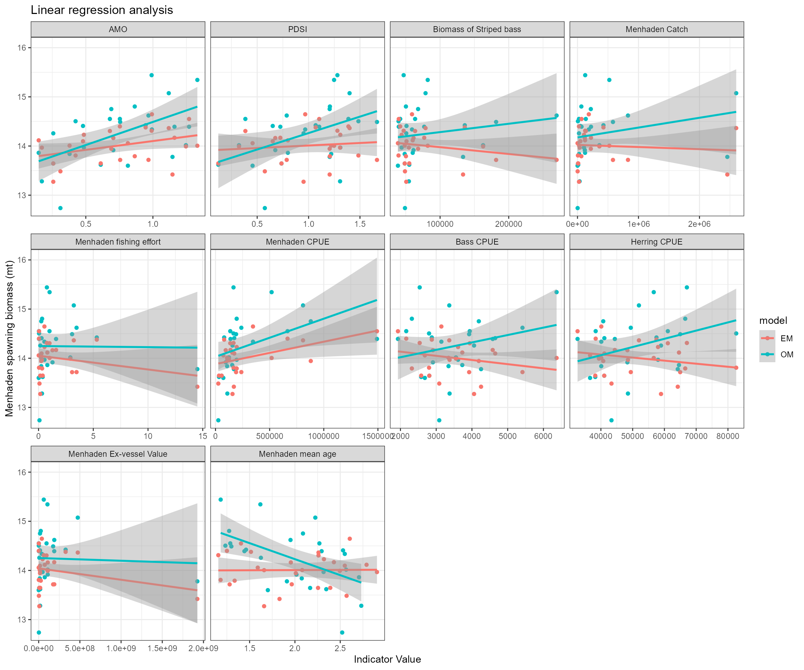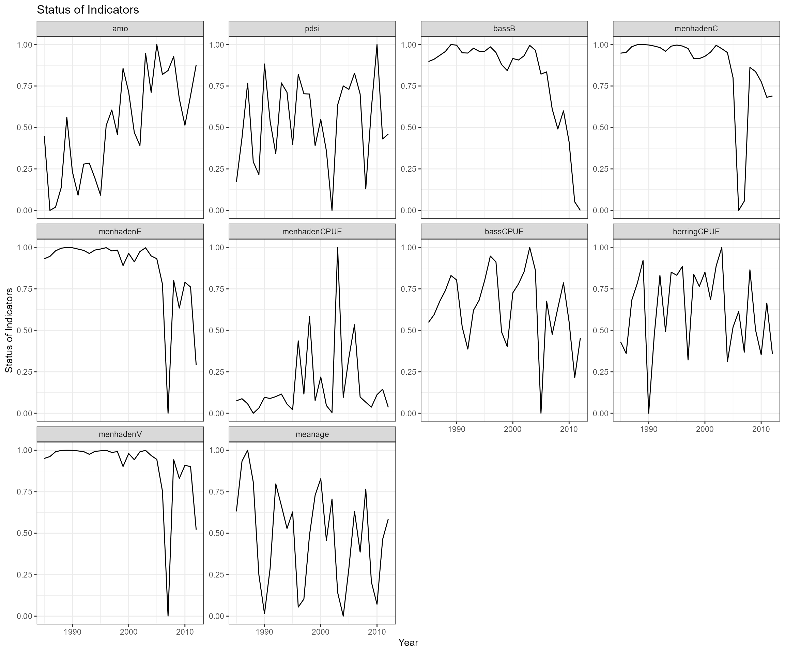
pdf 2
- Projections from operating model
 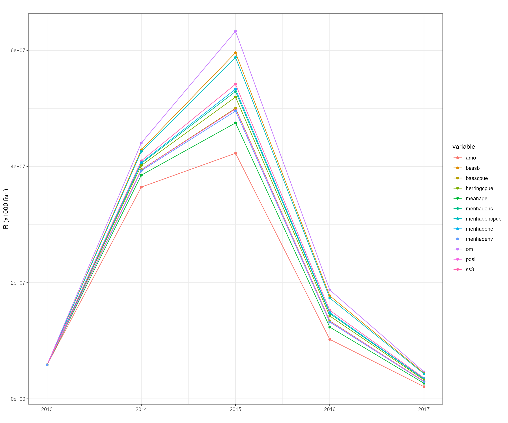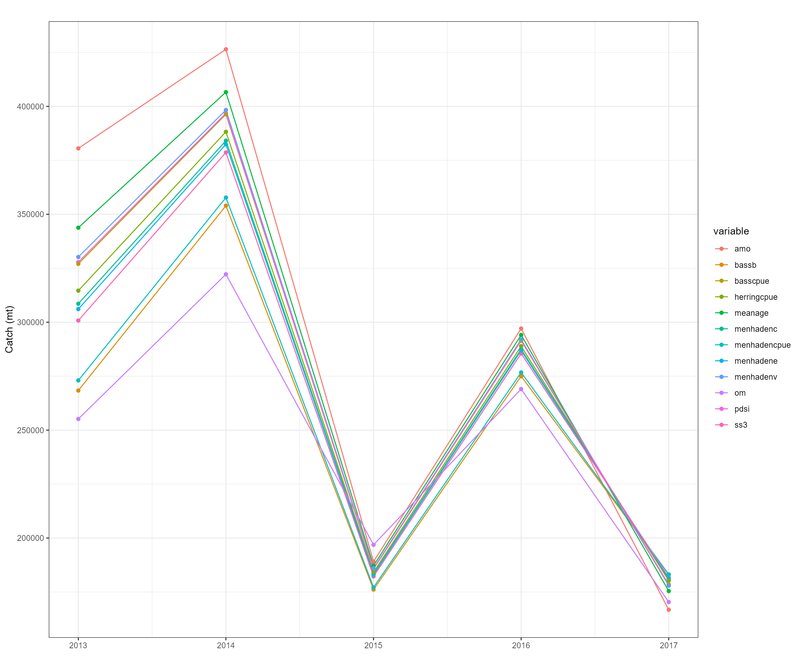
Average_Catch B_K B_BMSY Average_Biomass Max 583680 0.35722 0.5798
3487086 Min 0 0.00000 0.0000 0 OM+OM FMSY 325749 0.00647 0.0109 249993
OM+DBSRA FMSY 265791 0.10476 0.1772 577647 OM+AMO Fadj 291985 0.07385
0.1249 499472 OM+PDSI Fadj 276068 0.09339 0.1580 549729 OM+Bass Biomass
Fadj 251317 0.11961 0.2023 612946 OM+Menhaden Mean Age 281419 0.08712
0.1474 533974 OM+Menhaden Catch Fadj 268904 0.10140 0.1715 569481
OM+Menhaden Effort Fadj 267933 0.10246 0.1733 572053 OM+Menhaden CPUE
Fadj 253564 0.11738 0.1985 607715 OM+Bass CPUE Fadj 275784 0.09371
0.1585 550540 OM+Herring CPUE Fadj 271239 0.09883 0.1672 563200
OM+Menhaden Value Fadj 276889 0.09244 0.1564 547374 SS3 EM+SS3 FMSY
530767 0.34016 0.5036 3398880 SS3 EM+AMO Fadj 583680 0.29487 0.3432
3166572 SS3 EM+PDSI Fadj 553962 0.32250 0.4343 3307962 SS3 EM+Bass
Biomass Fadj 505129 0.35722 0.5798 3487086 SS3 EM+Menhaden Mean Age Fadj
534955 0.33715 0.4912 3383368 SS3 EM+Menhaden Catch Fadj 534955 0.33715
0.4912 3383368 SS3 EM+Menhaden Effort Fadj 510137 0.35405 0.5649 3470664
SS3 EM+Menhaden CPUE Fadj 553962 0.32250 0.4343 3307962 SS3 EM+Bass CPUE
Fadj 534955 0.33715 0.4912 3383368 SS3 EM+Herring CPUE Fadj 553962
0.32250 0.4343 3307962 SS3 EM+Menhaden Value Fadj 553962 0.32250 0.4343
3307962 Bonanza_Period Collapse_Period Max 5 0 Min 0 5 OM+OM FMSY 0 4
OM+DBSRA FMSY 0 1 OM+AMO Fadj 0 3 OM+PDSI Fadj 0 2 OM+Bass Biomass Fadj
0 1 OM+Menhaden Mean Age 0 2 OM+Menhaden Catch Fadj 0 1 OM+Menhaden
Effort Fadj 0 1 OM+Menhaden CPUE Fadj 0 1 OM+Bass CPUE Fadj 0 2
OM+Herring CPUE Fadj 0 1 OM+Menhaden Value Fadj 0 2 SS3 EM+SS3 FMSY 1 0
SS3 EM+AMO Fadj 1 0 SS3 EM+PDSI Fadj 1 0 SS3 EM+Bass Biomass Fadj 1 0
SS3 EM+Menhaden Mean Age Fadj 1 0 SS3 EM+Menhaden Catch Fadj 1 0 SS3
EM+Menhaden Effort Fadj 1 0 SS3 EM+Menhaden CPUE Fadj 1 0 SS3 EM+Bass
CPUE Fadj 1 0 SS3 EM+Herring CPUE Fadj 1 0 SS3 EM+Menhaden Value Fadj 1
0 pdf
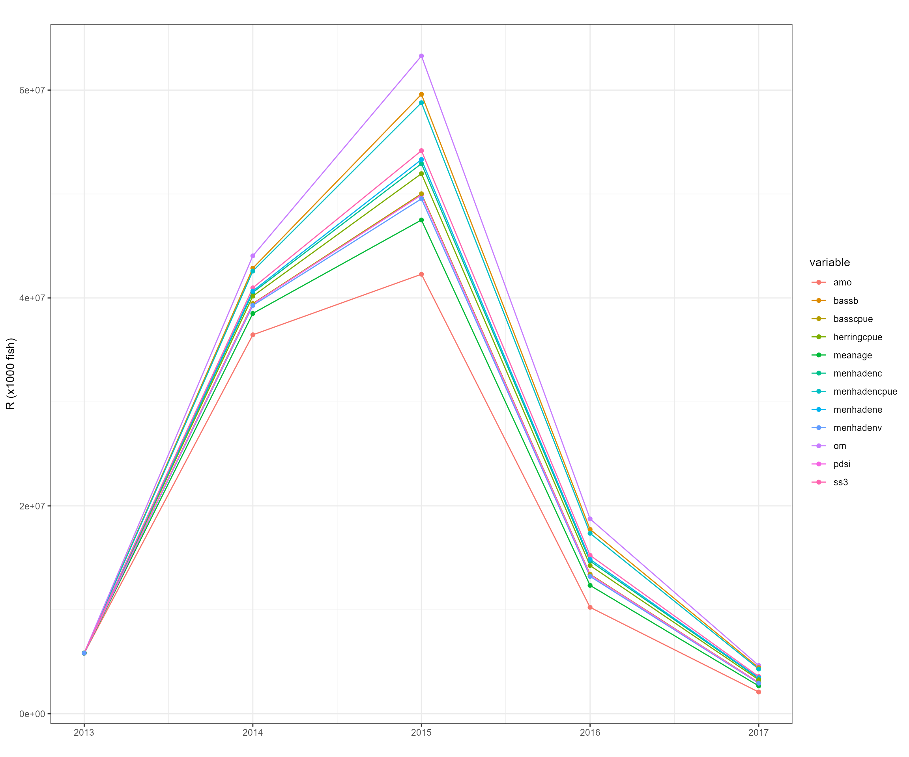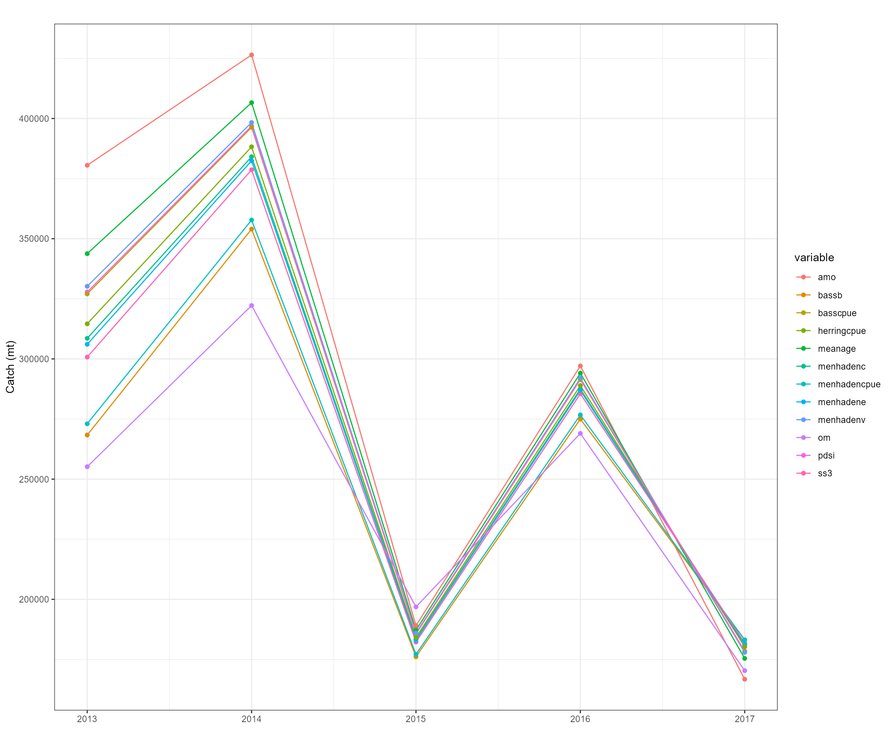
Average_Catch B_K B_BMSY Average_Biomass Max 583680 0.35722 0.5798
3487086 Min 0 0.00000 0.0000 0 OM+OM FMSY 325749 0.00647 0.0109 249993
OM+DBSRA FMSY 265791 0.10476 0.1772 577647 OM+AMO Fadj 291985 0.07385
0.1249 499472 OM+PDSI Fadj 276068 0.09339 0.1580 549729 OM+Bass Biomass
Fadj 251317 0.11961 0.2023 612946 OM+Menhaden Mean Age 281419 0.08712
0.1474 533974 OM+Menhaden Catch Fadj 268904 0.10140 0.1715 569481
OM+Menhaden Effort Fadj 267933 0.10246 0.1733 572053 OM+Menhaden CPUE
Fadj 253564 0.11738 0.1985 607715 OM+Bass CPUE Fadj 275784 0.09371
0.1585 550540 OM+Herring CPUE Fadj 271239 0.09883 0.1672 563200
OM+Menhaden Value Fadj 276889 0.09244 0.1564 547374 SS3 EM+SS3 FMSY
530767 0.34016 0.5036 3398880 SS3 EM+AMO Fadj 583680 0.29487 0.3432
3166572 SS3 EM+PDSI Fadj 553962 0.32250 0.4343 3307962 SS3 EM+Bass
Biomass Fadj 505129 0.35722 0.5798 3487086 SS3 EM+Menhaden Mean Age Fadj
534955 0.33715 0.4912 3383368 SS3 EM+Menhaden Catch Fadj 534955 0.33715
0.4912 3383368 SS3 EM+Menhaden Effort Fadj 510137 0.35405 0.5649 3470664
SS3 EM+Menhaden CPUE Fadj 553962 0.32250 0.4343 3307962 SS3 EM+Bass CPUE
Fadj 534955 0.33715 0.4912 3383368 SS3 EM+Herring CPUE Fadj 553962
0.32250 0.4343 3307962 SS3 EM+Menhaden Value Fadj 553962 0.32250 0.4343
3307962 Bonanza_Period Collapse_Period Max 5 0 Min 0 5 OM+OM FMSY 0 4
OM+DBSRA FMSY 0 1 OM+AMO Fadj 0 3 OM+PDSI Fadj 0 2 OM+Bass Biomass Fadj
0 1 OM+Menhaden Mean Age 0 2 OM+Menhaden Catch Fadj 0 1 OM+Menhaden
Effort Fadj 0 1 OM+Menhaden CPUE Fadj 0 1 OM+Bass CPUE Fadj 0 2
OM+Herring CPUE Fadj 0 1 OM+Menhaden Value Fadj 0 2 SS3 EM+SS3 FMSY 1 0
SS3 EM+AMO Fadj 1 0 SS3 EM+PDSI Fadj 1 0 SS3 EM+Bass Biomass Fadj 1 0
SS3 EM+Menhaden Mean Age Fadj 1 0 SS3 EM+Menhaden Catch Fadj 1 0 SS3
EM+Menhaden Effort Fadj 1 0 SS3 EM+Menhaden CPUE Fadj 1 0 SS3 EM+Bass
CPUE Fadj 1 0 SS3 EM+Herring CPUE Fadj 1 0 SS3 EM+Menhaden Value Fadj 1
0 pdf